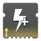
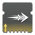
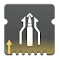

武器 PERK
| PERK | 图标 | 说明 |
|---|---|---|
| 加速散热器 | 被动提供 +25 冷却效率与 ↑+2 填装速度，代价是伤害降低 2%。 热量武器如何运作？ | |
| 柔缓 | 武器击杀时： 伤害提高 30%（手炮 27%），+10 射程，开火恢复延迟／充能时间倍率／蓄力时间倍率 1.2×，持续 7 ↑8 秒。 收枪移除该增益。 | |
| 适配弹药 | 对非同属性护盾或屏障勇士护盾造成伤害时： 对战斗人员护盾的伤害加成可叠加。 击中同属性护盾或无护盾战斗人员时移除该增益。 每次命中 ???% ↑???%，最高 ???% ↑???%：融合步枪。 每次命中 10% ↑14%，最高 50% ↑69.5%：自动步枪、机枪、脉冲步枪、追踪步枪。 每次命中 22% ↑31%，最高 44.5% ↑61.5%：线性融合步枪。 每次命中 25% ↑34.5%，最高 50% ↑69.5%：弓箭、偃月、手炮、斥候步枪。 | |
| 粘附弹药 | 拾取弹药块时： 生成 +1 弹药。 下一发子弹在造成伤害时附着一枚黏性炸弹。 可由动能合成弹药块触发。 黏性炸弹在 0.8 秒后引爆，在 6 米范围内造成变动的动能伤害 [70 ↑77] 并施加疲惫，最远端衰减至 50% 伤害。 对战斗人员的伤害随战斗人员等级修正缩放，并计为动能武器伤害。 手炮、斥候步枪：766 ↑843 狙击步枪：1,044 ↑1,149 | |
| 肾上腺素成瘾 | 武器或手雷击杀时： 伤害提高 6.7%｜13.3%｜20%｜26.6%｜33.3%，+20 操控性，持续 4.5 ↑5 秒。手雷击杀给予 5 层，收枪状态下也算。 再次以武器或手雷击杀可刷新增益持续时间。 收枪期间可触发，且收枪后保留。 | |
| 聚合充能 | 对受元素减益影响的战斗人员： 伤害提高 10% ↑11%｜20% ↑22%｜30% ↑33%。 效果随该战斗人员身上不同减益的数量提升，3 种不同减益时达到上限。 不同减益清单： 致盲 - 震颤｜灼烧 - 点燃｜压制 - 不稳定 - 虚弱｜减速 - 冻结 - 碎裂｜割裂 - 悬停 - 瓦解 | |
| 空中袭击 | 被动提供 +10 ↑12 空中效率。 武器击杀时： 每层 +30 ↑32 空中效率，持续 5 秒，最多 2 层。空中击杀给予 2 层。 再次武器击杀可刷新增益持续时间。 收枪移除该增益。 | |
| 空中扳机 | 被动提供 +20 ↑+30 弹药生成。 滞空期间： +30 ↑35? 填装速度，填装时长倍率 0.8×，精度锥角 -15?% ↑-20?%，自动瞄准锥角 -20?%。 | |
| 全明星 | 拾取弹药块时： 填满弹匣。 伤害提高 35% [15%]，+100? 填装速度，持续 6 ↑7 秒。 再拾取动能合成弹药块或特殊弹药块可延长增益持续时间 7 秒，最长 10 秒。 计时只在持有带全明星的武器时走动。 拾取威能弹药块可获得 9 ↑10 秒的全明星。 | |
| 合金弹匣 | 在弹匣容量 50% 或以下开始填装时： 线性提供最高 0.8× ↑0.75× 的填装时长倍率。 该 Perk 从 50% 弹匣时的填装时长倍率 0.9× ↑0.85× 动态缩放至 0% 弹匣时的 0.8× ↑0.75×。 | |
| 辅助炸药 | 在彼此 4 秒内造成 3 次元素击杀，或击杀受元素减益影响的战斗人员时： 获得 1 层辅助炸药，最多 4? ↑5 层。 击杀可由任意方式取得。 对受元素减益影响的战斗人员造成动能武器击杀时，还会立即生成一枚微型导弹。试试配瓦解或灼烧弹！ 持有辅助炸药层数时造成武器直击击杀： 消耗 1 层辅助炸药，在战斗人员死亡位置上方生成一枚追踪的动能微型导弹。 微型导弹会积极追踪 30 米内最近的战斗人员，命中即爆炸，在很小的范围内造成变动的动能伤害 [100]。 微型导弹伤害： 主要武器：383 霰弹枪：435 微型导弹手枪（极高反射）：348 榴弹发射器（山巅）：292 威能狙击步枪：76 | |
| 刺客野心 | 在造成武器击杀后完成填装时： 按击杀数从备弹中丰盈满溢弹匣，最高提升 150% 弹匣容量。 弹匣数始终向上取整。击杀计数收枪后保留。 主要武器：每次击杀提升 20% 弹匣容量。 特殊武器｜威能武器：每次击杀提升 10% 弹匣容量。 ↑被动提供 +5 填装速度。 | |
| 弓手的智谋 | 腰射精准命中时： +100? 填装速度，填装时长倍率 0.x?×，蓄力时间倍率 0.4×，持续 4 ↑5 秒。 再次腰射精准命中可延长增益持续时间 +4 秒，最长 8 ↑? 秒。 收枪后增益保留。 | |
| 弓手节奏 | 精准命中时： 蓄力时间倍率 0.75×，持续 3 ↑4 秒。 收枪移除该增益。 | |
| 穿甲弹 | 对战斗人员元素护盾与屏障勇士护盾的伤害提高 5%。 子弹可穿透战斗人员一次。 被动提供 +5 ↑+7 射程。 | |
| 刺客剑刃 | 武器击杀时： 伤害提高 15%，移动速度提升至最大，持续 5 ↑5.5 秒。 再次武器击杀可刷新增益持续时间。 收枪后增益仍然生效。 | |
| 羸弱能量球 | 在彼此 5 秒内造成与弹匣挂钩的伤害次数时： 下一次伤害生成一枚能量球，提供 0.87% ↑1.1% 超能能量。 计数收枪后保留。 让下一次伤害生成能量球所需的伤害次数： 弹匣的 55.55% + 1，向下取整。 弓箭：4｜刀剑：5｜榴弹发射器：3｜火箭发射器：2｜区域拒止榴弹发射器：26 支援自动步枪对受伤队友的治疗命中算作 2 次命中。（弹匣的 33.5% + 1），对受伤盟友的治疗命中向下取整。 武器 Perk 造成的灼烧跳伤不计入。 生成能量球后有 0.5 秒冷却。冷却期间的伤害不计入。 | |
| 自动填装枪套 | 收枪 3.5 ↑3.3 秒后： 填满弹匣。 | |
| B 计划 | 举枪时： 伤害降低 20%，+100 操控性，充能时间倍率 0.7×，持续 2 ↑2.5 秒。 线性融合步枪专属：开火可刷新增益持续时间。 武器需收枪 3 秒后才能再次触发。 | |
| 诱导推销 | 在上一次伤害后 7 秒内用每把装备的武器各造成一次伤害时： 伤害提高 30%，持续 10 ↑11 秒。 增益在持续时间结束前无法刷新。Perk 生效期间伤害计时停用。收枪后增益保留。 | |
| 枪管收缩装置 | 武器击杀时： 弹丸／弹道散布 -20%，持续 7.5 ↑8.5 秒。 增益无法刷新。收枪后增益保留。 | |
| 信标弹药 | 武器击杀时： 获得 1 层信标弹药，持续 6 ↑7 秒，最多 4 层。 造成额外伤害时，若剩余时间不足 4 秒则延长至 4 秒。 收枪期间可触发，且收枪后保留。 信标弹药： +15 填装速度，填装时长倍率 0.9×，弹道追踪锥角提高 45%。 额外层数只提升弹道追踪的强度。弹道追踪只在锁定准星激活时生效。 | |
| 迷惑爆发 | 击杀后 ? 秒内完成填装时： 获得迷惑爆发，持续 6 ↑7 秒。 迷惑爆发生效期间的下一次直击，会在战斗人员上方投出一枚闪光弹，0.85 秒后爆炸。 闪光弹造成 10 [4] 点动能伤害，并使 10 米内的战斗人员迷失方向 3.5 ↑? [1 ↑1.25] 秒。 收枪后增益保留。 | |
| 二元轨道 | 造成相反属性元素击杀时： 伤害提高 25%，持续 8.5 ↑10.5 秒。 再次以相反属性的来源击杀可刷新增益持续时间。 收枪期间可触发，且收枪后保留。 电弧、烈日或虚空击杀 --> 动能、冰影与缚丝武器获得增益。 动能、冰影或缚丝击杀 --> 电弧、烈日与虚空武器获得增益。 | |
| 双脚架 | 被动提供以下效果： +1 弹匣容量、+5 备弹，开火恢复延迟 0.75× 伤害降低 25%，-30 ↑-25 爆炸范围，-20 ↑-15 填装速度。 狼群弹药以及集束炸弹、幼雏等其他 Perk 效果，同样受该伤害惩罚影响。 | |
| 爆破分配器 | 造成武器爆炸伤害时： 每层 +10 ↑+13 手雷属性，持续 5 秒，5 层时最高 +50 ↑+65 手雷属性。 收枪后增益仍然生效。 | |
| 钝器处决弹药 | 在距战斗人员 15 米内造成近战伤害时： 10 ↑11 秒内的下一次连发伤害提高 500% [100%]，+100 操控性。 增益结束后需 4 秒冷却才能再次触发。 收枪期间可触发，但生效中收枪即移除。 任何需要冲刺、滑铲或执行下砸的强化近战都不会触发钝器处决弹药。 | |
| 弩弹拾荒者 | 拾取弩箭时： +? 操控性，+? 填装速度，持续 15 ↑16? 秒。 | |
| 无尽悲痛 | 被动提供 +30 弹匣属性。 成为最后存活的时： 武器击杀时： 填满弹匣。 | |
| 盒式呼吸法 | 弹匣 >0 时机瞄不开火 1.5 ↑1.4 秒后： 机瞄状态下的下一发子弹瞄准辅助衰减距离提高 10%，弱点伤害提高 40%。 威能狙击步枪与偃月改为弱点伤害提高 30%。 计时从按下机瞄键起算。 弱点伤害？最不绕弯的说法 它增益对带护盾战斗人员的「精准命中」，也对没有精准倍率的武器生效，只要打中弱点即可。 弱点增益对神圣裁决力场无效 | |
| 爆破之构 | 虚空覆盖护盾、冰霜护甲或织造铠甲生效期间： +30? 稳定性，+? 瞄准辅助，?% 受击抖动抗性 ↑条件不再满足后增益残留 2 秒。 | |
| 燃烧野心 | 在彼此 2 秒内造成与弹匣挂钩的直击次数时： 2 秒内的下一次直击施加灼烧。 命中计数收枪后保留。命中不必落在同一目标上。 燃烧野心施加的灼烧计为武器伤害。 凑齐灼烧弹所需的命中次数： 弹匣的 55%，向下取整。 弓箭：↑2｜刀剑：2 ↑1 线性融合步枪｜精密：↑1，连发：↑2? 火箭手枪：↑3 枚导弹 斥候步枪｜精密：↑5，速射：↑8 融合步枪：↑11 发 机枪｜适配：↑13，攻击型：↑19，速射：↑28? 自动步枪｜热量、精密：↑14｜适配、支援：↑19｜速射：↑23 追踪步枪：↑29 灼烧弹以及对已灼烧战斗人员的直击都会施加灼烧。 主要武器施加 x10+5 灼烧（对已灼烧的为 [x4+5?]）。 特殊武器与威能武器施加 x20+10 灼烧。 施加灼烧后有 0.5 秒冷却，冷却结束才能再次施加。冷却是全局的，不分战斗人员。 | |
| 蝴蝶 | 弹匣 >0 时机瞄不开火 1.5 ↑1.4 秒后： 下一次直击击杀会让目标死亡时爆炸，在约 8 米范围内造成变动的、与武器属性相同的伤害 [?]，最远端衰减至 30% 伤害。 火箭发射器（核心星辰 IV）上：爆炸伤害击杀也计入，但击杀必须在保持机瞄时取得。 计时从按下机瞄键起算。退出机瞄或取得击杀后移除该增益。 只要武器仍填装有弹药，机瞄不开火 1.4 秒后 Perk 可再次触发。 蝴蝶最大伤害： 斥候步枪：? 弓箭：453 追踪步枪：473 霰弹枪：590 狙击步枪：? 偃月：? 重型弩：836 线性融合步枪：689 火箭发射器：836 | |
| 级联点 | 在彼此 5 秒内用另一把武器造成多次精准命中，或用另一把武器取得击杀时： 获得「级联点就绪」，持续 5 秒。 级联点就绪生效期间举枪时： 获得级联点，持续 2.5 ↑2.75 秒。 级联点为机枪与微型冲锋枪提供开火恢复延迟 0.7×，其余武器为 0.6×。 精准命中走计数制，累计到 100% 时给予级联点就绪。 2 次精准命中：弓箭、线性融合步枪、霰弹枪、狙击步枪。 4 次精准命中：手炮、斥候步枪、手枪。 6 次精准命中：自动步枪、机枪、脉冲步枪、微型冲锋枪、追踪步枪。 | |
| 迅捷 | 被动提供 +20 操控性与 +20 填装速度。 成为最后存活的时： +100 操控性、+100 填装速度、+? 瞄准辅助、50% 受击抖动抗性、精度提高、瞄准镜高亮增强，并在机瞄期间启用雷达。 | |
| 连锁反应 | 武器击杀时： 目标爆炸，造成 [特殊 = 44.8? ↑49.3? ｜ 威能 = 72.8 ↑80?] 与武器元素匹配的伤害，最低衰减至 0% 伤害。 火箭脉冲步枪：158 ↑174 ｜ 后膛榴弹发射器：189 ↑208 ｜ 霰弹枪、区域拒止榴弹发射器：236 ↑260 ｜ 偃月：284 ↑313 ｜ 特殊武器 2.4 米内无衰减，6 米最大衰减 波形榴弹发射器、机枪、刀剑：352 ↑387 ｜ 弹鼓榴弹发射器、线性融合步枪：448 ↑493 ｜ 火箭发射器：543 ↑598 ｜ 威能武器 3 米内无衰减，7 米最大衰减。 ↑被动为刀剑提供 +20 防御持久。 | |
| 混沌重塑 | 在至少 12 ↑11.5 秒里每 5 秒都保持造成或受到伤害的状态后： 混沌重塑 x1 ｜ 伤害提高 20%，持续 7 秒。 造成或受到伤害会刷新该增益的持续时间。 增益可在收枪状态下触发，并在收枪后保留。 保持混沌重塑 x1 再满 12 ↑11.5 秒后： 混沌重塑 x2 ｜ 伤害提高 35%，持续 7 秒，激活期间触发治疗效果。 造成或受到伤害会刷新该增益的持续时间。 增益可在收枪状态下触发，并在收枪后保留。 混沌重塑 x2 治疗效果 持枪时以 5 点生命值/秒 的速率蓄积一份持续治疗效果，蓄满 35 点生命值（7 秒）后或收起该武器时自动触发。 治疗效果按已蓄积的量以 5 点生命值/秒 恢复生命值，若持枪满 7 秒则实际上变为持续生效。 治疗效果激活时，会阻止非混沌重塑 x2 来源把生命值恢复到（200 − 已蓄积治疗量）最大生命值以上。 治疗效果在视觉上不受彪悍的治疗惩罚削减，触发时生命值条会来回跳动。 实际使用中就当作 5 点生命值/秒 的效果，缺掉的「已恢复生命值」反正由治疗效果补上。 我不断看到更多讨论这件事的帖子。这件事被夸大得离谱 ↑把获得1 层混沌重塑所需的战斗时间缩短到 11.5 秒。 | |
| 冰冷弹匣 | 弹匣容量在 50% ↑40% 及以上时： 直击命中触发冰影爆发，对 4? 米内的战斗人员施加 x60 减速，持续 4+4 [1.5+0.5] 秒。 速射融合步枪与火箭手枪施加 x40 减速。 每次射击只能触发一次。 | |
| 生命轮回 | 触发支援框架加速时： 伤害提高 25% [12.5%]，持续 10 ↑11 秒。 增益在收枪后保留。 | |
| 紧逼近战 | 造成偃月弹丸击杀时： 偃月近战伤害提高 60% [30%]，持续 10 ↑11 秒。 增益在收枪后保留。 再造成弹丸或近战伤害会把增益持续时间延长 +5 秒，最多 10 ↑11 秒。 | |
| 打烊时间 | 弹匣从 50% 往下降至 0% 的过程中： 弹匣为 50% 时提供 +10 ↑+? 射程、+30? ↑+? 操控性、操控性时长倍率 0.9×?，以及精度锥大小 -5%? ↑-?%。 动态提升至弹匣为 0% 时的 +20 ↑+? 射程、+50? ↑+? 操控性、操控性时长倍率 0.8×?，以及精度锥大小 -10%? ↑-?%。 特殊武器获得的收益减半。 | |
| 小丑皇弹药筒 | 完成填装时： 随机提高 10% ↑13% 至 50% 的弹匣容量。总是向上取整。 平均为提高 30% ↑31.5% 弹匣容量。 | |
| 集束炸弹 | 造成伤害时释放 8 枚集束炸弹。 集束炸弹在造成伤害时爆炸，每枚在 4 米内造成至多 150 ↑165 [11 ↑12] 伤害，无衰减。 | |
| 冷冻钢铁 | 充能刀剑命中施加减速，持续 4.25+? [1.5+?] 秒。 轻攻击施加 x40 减速。 重攻击施加 x60 减速。 闪电反击那次让目标迷失方向的爆炸施加 x60 减速。 ↑被动提供 +10 弹药容量（刀剑）与 +10 弹匣属性（与战术弹匣相同） | |
| 集体行动 | 与元素拾取物交互时： 伤害提高 30% ↑33% [10% ↑11%]，持续时间取决于元素拾取物。 焰灵与虚空裂口提供 +8 秒。 离子轨迹、冰影碎片，以及缠结／电弧元素能量球的拾取与爆炸各提供 +4 秒。 额外的拾取会按各自对应的时长延长增益持续时间，最多 16 秒。 增益可在收枪状态下触发，并在收枪后保留。 | |
| 集体爆破 | 与元素拾取物交互时： 命中提供 ↑增加的手雷技能能量，持续时间取决于元素拾取物。 焰灵与虚空裂口提供 +8 秒。 离子轨迹、冰影碎片，以及缠结／电弧元素能量球的拾取与爆炸各提供 +4 秒。 额外的拾取会按各自对应的时长延长增益持续时间，最多 16 秒。 增益可在收枪状态下触发，并在收枪后保留。 手雷技能能量获取： 日后补上 :) 日后补上 :) 日后补上 :) | |
| 集体拳击 | 与元素拾取物交互时： 命中提供 ↑增加的近战技能能量，持续时间取决于元素拾取物。 焰灵与虚空裂口提供 +8 秒。 离子轨迹、冰影碎片，以及缠结／电弧元素能量球的拾取与爆炸各提供 +4 秒。 额外的拾取会按各自对应的时长延长增益持续时间，最多 16 秒。 增益可在收枪状态下触发，并在收枪后保留。 近战技能能量获取： 散射手炮：0.5% ↑0.55% 连发手枪：0.78% ↑0.86% 融合步枪：1.15% ↑1.27% 火箭脉冲步枪：1.95% ↑2.15% 手枪：2.34% ↑2.57% 斥候步枪：3.34% ↑3.67% 火箭发射器：12.9% ↑14.2% | |
| 强制填装 | 弹匣容量高于 50% 时： +50 ↑55 填装速度，填装时长倍率 0.95×。 | |
| 受控连射 | 连射中每一发都命中，或造成武器击杀时： 伤害提高 20%，充能时间倍率 0.9×，持续 2 ↑2.5 秒。 增益在收枪后保留。 | |
| 冷却饰物 | 拾取元素拾取物或超能能量球时： 发热量消散 -33?% ↑-35%。 | |
| 逼入绝境 | 15 米内有 2 名战斗人员时： 充能／蓄力时间倍率 0.85×，↑并 +10 稳定性。 条件不再满足后增益延续 1.5 秒。 ↑被动提供 +5 稳定性。 | |
| 强力反击 | 开始格挡后 0.5 秒内受到伤害时： 伤害提高 50%，持续 2 ↑3 秒。 | |
| 结晶残花 | 武器击杀时： 获得结晶残花，持续 4 秒。 结晶残花激活期间： 武器击杀会让战斗人员死亡时释放一枚冰影追踪弹。 冰影追踪弹朝随机方向飞行 3? 米，消散时生成一座中型? ↑大型的冰影水晶。 | |
| 危险区域 | 15 米内有 3 名战斗人员时： 爆炸范围提高 ?%，自身受到的伤害降低。 条件不再满足后增益延续 3.5 秒。 榴弹发射器：自伤降低 40%。 火箭发射器：自伤降低 99.99%，并允许火箭跳。 ↑被动提供 +5 爆炸范围。 | |
| 解构 | 在彼此间隔 6 秒内造成基于弹匣数量的命中时： 对构造体与载具的伤害提高 40%，持续 5 ↑6 秒。Perk 激活期间的额外命中会刷新伤害增益的持续时间。 填充 10% 弹药，向上取整。 弹药填充没有冷却，再次达成所需命中即可反复触发。 激活所需命中数： 弹匣的 50% [主要武器 25%] + 2，向下取整 ｜ 弓箭：3 次命中 对构造体／载具的命中，主要武器按 1.5× 计进度、特殊武器按 2× 计进度。 波形框架榴弹发射器： 3 次命中。直击算作 2 次命中。对构造体／载具不获得额外进度。 | |
| 精细调整 | 发热量从 0% 上升至 50% 的过程中： 发热量为 0% 时提供至多 +? ↑22? 射程、+? ↑+? 操控性，以及 -?% ↑-?% 精度锥增长。 增益从 0% 发热量时的 100% 效果动态衰减至 50% 发热量时的 50% 效果。 | |
| 爆破专家 | 武器击杀时： 提供 10% ↑11% 手雷技能能量。 融合步枪、偃月、霰弹枪与狙击步枪提供 20% ↑22% 手雷技能能量。 使用手雷技能会填满弹匣。 两次弹匣填充之间有 3 秒冷却。 | |
| 瓦解 | 造成精准击杀时： 目标触发虚空爆发，对 7 米内的战斗人员施加虚弱。 两次触发之间有 1.5? ↑1 秒冷却。 | |
| 亡命之徒 | 在造成一次精准击杀、或在彼此间隔 3 秒内造成 3 次击杀之后的 5.2 秒内完成填装时： 开火恢复延迟 0.7×，持续 6 ↑7 秒。 重新触发该 Perk 可刷新增益。收枪移除该增益。 | |
| 铤而走险 | 武器击杀时： 铤而走险 x1 ｜ 伤害提高 10%，持续 7 ↑7.5 秒。额外的武器击杀会刷新增益持续时间。 手雷或近战击杀时： 铤而走险 x2 ｜ 伤害提高 20%，持续 7 ↑7.5 秒。额外的武器击杀会刷新增益持续时间。 铤而走险 x2 激活期间再造成一次手雷或近战击杀时： 铤而走险 x3 ｜ 伤害提高 30%，持续 7 ↑7.5 秒。额外的武器、手雷与近战击杀会刷新增益持续时间。 增益可在收枪状态下触发，并在收枪后保留。 | |
| 失衡弹药 | 武器击杀时： 目标触发虚空爆发，对 7 米内的战斗人员施加不稳定。 获得不稳定弹药，持续 3 ↑4.5 秒。 触发后有 1.5 秒冷却。 | |
| 引爆光束 | 在彼此间隔 ? 秒内造成 25 ↑20 次命中时： 在目标周围触发爆炸，造成 250 [100] 元素匹配伤害，在 8 米内衰减至 50% 伤害。 | |
| 维度偏移 | 拾取虚空裂口时： 获得维度裂隙，直到下一次武器击杀为止。 可在收枪状态下触发，并在收枪后保留。 维度裂隙激活期间造成武器击杀时： 接下来 5? 秒内，武器击杀提供 22.5 ↑25 点虚空覆盖护盾，持续 8+4 秒。 额外的武器击杀会把增益持续时间延长至 5 秒。 | |
| 失调协议 | 在用另一把武器造成击杀后 5 秒内举起一把武器时： 机瞄时长倍率 0.75×、精度锥大小 -25%、+30 空中效率，持续 7 ↑8 秒。 增益在收枪后保留。 失调协议激活期间造成武器击杀时： 主要武器填满弹匣 ｜ 特殊武器与威能武器每发返还 1 发弹药。 | |
| 迷失手雷 | 被动提供 -200 爆炸范围、伤害降低 25%、爆炸伤害半径缩小 15%。 爆炸 6 米内的、与战斗人员会迷失方向，持续 4.5 秒。 勇士与不受迷失方向影响。迷失方向的半径无法改变。 会短暂失去 HUD，画面扭曲至多 ? 秒。持续时间取决于与爆炸之间的距离。 | |
| 瓦解破裂 | 打破元素护盾、屏障或护盾时： 对该战斗人员施加动能伤害易伤，使其受到的动能伤害提高 50%，持续 5.5 ↑? [5] 秒。不影响冰影与缚丝伤害。 与所有其他增益和减益叠加（包括自身）。 可在同一个战斗人员身上施加多次，每层各自计时，并以乘法叠加。 | |
| 蜻蜓 | 造成精准击杀时： 目标爆炸，在 8 米半径内造成基于弹药类型的 [95.3] 与武器匹配的伤害，最远处衰减至最低 0% 伤害。 主要弹药 = 332 ↑365 特殊弹药 = 433 ↑477 威能弹药 = 397 ↑438 | |
| 丢弃型弹匣 | 被动提供 +30 填装速度、时长倍率 0.9×，以及 -20 弹匣容量属性。 | |
| 双重填装 | 填装时每次额外填充 1 ↑2 发弹药。 | |
| 决斗者之境 | 刀剑击杀时： +60 ↑+65 防御效率、+60 ↑+65 防御抗性、+60 ↑+60 防御持久与 +60 ↑+65 充能效率。 收枪移除该增益。 | |
| 动态减摆 | 扣住扳机期间： 精度锥大小 -?% ↑-?%、精度锥增长 -10% ↑-12.5%，每发射一枪 +1 稳定性。 射出 10 ↑8 发后叠加至精度锥大小 -?%、精度锥增长 -100%、稳定性 +10。 效果处于最大强度时移除全部弹道散布，并提供高于初始值的精度。 | |
| 急切刀锋 | 举起刀剑时： 接下来 3 秒内的一次挥砍突进距离提高 80% ↑100%。空中突进距离降低 20%。 增益移除后进入 3 秒冷却。收枪移除该增益。 | |
| 涡流电流 | 举起该武器后冲刺 1.5 秒时： +? 操控性、操控性动画倍率 0.95×、+20 填装速度、填装时长倍率 0.95×，持续 3 ↑? 秒。 再次开始冲刺会刷新增益持续时间。 处于增幅状态时： 被动获得上述冲刺加成，并将填装速度增益提高至 +60 ↑+?。 | |
| 元素电容 | 根据所装备超能技能的元素被动提供属性奖励。 烈日：+50 ↑+55 填装速度。 电弧：+50 ↑+55 操控性。 虚空：+20 ↑+25 稳定性。 冰影：+20 ↑+25 后坐方向，机瞄移动速度惩罚降低 20%。 缚丝：+20 ↑+25 空中效率。 | |
| 元素磨砺 | 造成元素伤害时，每使用一种不同元素获得 1 层元素磨砺，持续 20 ↑23 秒，使用 5 种不同元素时最多 5 层。 获得层数时刷新增益持续时间，达到 5 层后无法再刷新。 该增益可在收枪状态下触发并保留。动能伤害不触发该增益。 元素磨砺 x1 ｜ 元素武器伤害提高 2.5% [1.25%]，动能武器伤害提高 10%。 元素磨砺 x2 ｜ 元素武器伤害提高 10% [5%]，动能武器伤害提高 20%。 元素磨砺 x3 ｜ 元素武器伤害提高 20%，动能武器伤害提高 30%。 元素磨砺 x4 ｜ 元素武器伤害提高 30%，动能武器伤害提高 35%。 元素磨砺 x5 ｜ 元素武器伤害提高 35%，动能武器伤害提高 40%。 | |
| 居合连斩 | 举起刀剑时： 伤害提高 30%，持续 1.5 ↑2? 秒。 增益移除后进入 2? 秒冷却。 | |
| 周而复始 | 武器击杀时： 每层 +5 射程、+8 稳定性、精度锥大小 -1.25%，持续 7 ↑7.5 秒，最多 4 层。精准击杀提供 2 层。 再次武器击杀会刷新增益持续时间。 增益在收枪后保留。 | |
| 能量转换 | 用刀剑格挡期间： 每承受 1 点伤害获得职业技能能量。 格挡近战伤害时获得 1.5% ↑1.55% 职业技能能量。 格挡非近战伤害时获得 1% ↑1.25% 职业技能能量。 承受未被格挡的伤害时获得 0.5% ↑0.625% 职业技能能量。 | |
| 启迪行动 | 命中时： 获得启迪行动层数，持续 2 秒，最多 12 层。 启迪行动每层平均提供 +4 操控性与填装速度，最高 +50 ↑+55? 操控性与 +50 ↑+55? 填装速度。 启迪行动： +2 ｜ +5 ｜ +5 ｜ +3 ｜ +5 ｜ +5 ｜ +5 ｜ +5 ｜ +3 ｜ +2 ｜ +5 ｜ +5 操控性与填装速度。 手炮命中提供 3 层。弓箭命中提供 ? 层。 全自动武器每次命中提供 1 层。 | |
| 大合奏 | 15 米内有队友时： +30 ↑+35 操控性、+40 ↑+45 填装速度。 不再满足条件后增益延续 1.5 秒。 | |
| 嫉妒刺客 | 用其他武器取得击杀后举起该武器时： 根据击杀数从备用弹药中丰盈满溢弹匣，弹匣容量最多提高 200%。 主要武器：每次击杀弹匣容量提高 10% ↑12.5%。 特殊武器 ｜ 威能武器：每次击杀弹匣容量提高 20% ↑22.5%。 若在弹匣全满时触发，每次触发最多提高 100% 弹匣容量。弹匣数值一律向上取整。 可根据切枪瞬间的弹匣量丰盈满溢，即弹匣为空且已达到最大加成时，弹匣容量会被完全填满。 | |
| 嫉妒军械库 | 用另外两把武器都造成任意伤害后举起该武器时： 完全填满弹匣。 持续伤害效果同样有效。 ↑被动提供 +10 弹药生成。 | |
| 爆炸箭头 | 弓箭以高爆载荷形式造成其非精准直击伤害的 50%。 高爆载荷在按距离计算的计时结束后引爆，对 3 米内的战斗人员造成伤害。 高爆载荷部分对战斗人员造成的伤害提高 30%，并造成更强的踉跄。 直击伤害的精准倍率被提高，以抵消高爆载荷部分无法造成精准命中这一点。 新比率 =（基础比率 - 50%）/（1 - 50%） 总伤害提升： 伤害提高该武器躯干伤害的 15%。精准伤害提升等于 15% / 精准倍率。 伤害保持不变。 ↑被动提供 +5 精度。 | |
| 爆炸光能 | 拾取能量球时： 获得 1 层爆炸光能，最多 6 ↑7 层。 收枪状态下也可获得层数，死亡时清空。 开火消耗 1 层爆炸光能，提高伤害并将爆炸范围属性设为 100。 榴弹发射器爆炸伤害提高 60%。 火箭发射器直击与爆炸伤害提高 25%。不提高狼群弹药伤害。 | |
| 高爆载荷 | 武器以高爆载荷形式造成其非精准直击伤害的 50%。 高爆载荷在直击命中时引爆，对 3 米内的战斗人员造成伤害。 高爆载荷部分造成的伤害提高 30%[手炮上降低 7%，]，并造成更强的踉跄。 直击伤害的精准倍率被提高，以抵消高爆载荷部分无法造成精准命中这一点。 新比率 =（基础比率 - 50%）/（1 - 50%） 总伤害提升： 伤害提高该武器躯干伤害的 15%。精准伤害提升等于 15% / 精准倍率。 躯干伤害保持不变。精准伤害「大致」保持不变。 ↑被动提供 +5 填装速度。 | |
| 风暴之眼 | 护盾生命值下降时（从 40 点护盾生命值开始触发，0 点护盾生命值时效果最大）： 线性提供最高 +30 ↑+33 操控性、精度锥大小 -40% ↑-44%、精度锥增长 -17% ↑-19%。 增益效果从 80 点护盾生命值时的 0% 线性提升至 0 点护盾生命值时的 100%（即濒死生命值） 增益持续到护盾恢复至 80 点护盾生命值为止。 | |
| 喂食狂热 | 武器击杀时： 每层提供填装速度与填装时长倍率，持续 3.5 秒，最多 5 层。 增益在收枪后保留。 +8 ↑+13 ｜ +50 ↑+55 ｜ +60 ↑+65 ｜ +75 ↑+85 ｜ +100 ↑+100 填装速度。 填装时长倍率 0.975× ｜ 0.9× ｜ 0.87× ｜ 0.84× ｜ 0.8×。 | |
| 沙场备战 | 被动提供 +20 ↑+30 弹药生成。 蹲下期间： +50 ↑+55? 填装速度、填装时长倍率 0.8×、举枪/收枪时长倍率 0.8×。 | |
| 萤火虫 | 精准击杀时： 目标爆炸，在 7.5 米半径内造成最高 104 [80] 点烈日伤害，并提供 +50 +55 填装速度，持续 6 秒。 填装增益在收枪后保留。对战斗人员的伤害因武器类型与战斗人员等级而异 :) | |
| 火线 | 处于 2 名队友 15 米范围内时： 精准伤害提高 20%。 ↑该 Perk 生效期间 +10 操控性。 | |
| 稳若磐石 | 蹲下期间： +20 ↑+25 稳定性、+30 ↑+35 操控性、精度锥大小 -40%、精度锥增长 -17%、偏航后坐力（水平后坐力）-80% 「融合步枪」10 ↑+13 稳定性、+15 ↑+18 操控性、精度锥大小 -20%、精度锥增长 -8.5%、偏航后坐力（水平后坐力）-40% | |
| 闪电反击 | 格挡期间受到伤害时： 触发正面爆炸，在最远约 8? 米的大范围锥形区域内造成最高 110 [?] 点与武器属性相符的伤害，并使战斗人员迷失方向 5 ↑6 秒。 伤害从贴脸时的 75 [14] 提升至 ? 米处的 110 [45]。对的震荡强度同样随距离变化。 对战斗人员的伤害受战斗人员等级修正影响，并计为武器伤害。 两次触发之间有 2.5 秒冷却。 | |
| 聚焦狂怒 | 以精准命中打中弹匣容量 35%（向上取整）的子弹时： 伤害提高 25%，持续 11 ↑12 秒。收枪或填装会重置精准命中计数。 增益生效期间可刷新，并在收枪后保留。不提高爆炸伤害类 Perk 的伤害。 | |
| 事不过四 | 每在 2 ↑3 秒内造成 4 次精准命中，就向弹匣生成 2 发弹药。 弹药生成无法使弹药超出基础弹匣容量。 命中之间的计时在收枪后保留。 | |
| 脆弱专注 | 护盾存在时提供 +20 射程。 进入濒死生命值时失效。 护盾生命值恢复至全满 1 ↑0.5 秒后重新生效。 | |
| 狂乱 | 持续保持每 5 ↑5.5 秒造成或受到一次伤害的状态达 12 秒后： 伤害提高 15%、+100 操控性、+100 填装速度，持续 7 秒。 造成或受到伤害会刷新增益持续时间。 该增益可在收枪状态下触发并保留。 | |
| 全自动击发系统 | 被动提供霰弹枪 0.9× 开火恢复延迟。 在其他所有武器类型上相当于游戏设置中「全自动开火」选项的 Perk 版本。 +而且我猜它还给「最后一支舞」「最终的沉沦」与「寂寞」提供 +5 稳定性。 | |
| 高密度收束器 | 机瞄期间： 弹丸散布 -3.25%。 精准伤害倍率从 1.1078× 降至 1.0294×，即精准伤害降低 7.6%。 ↑被动提供 +2 操控性。 | |
| 掌控全场 | 弹丸射出 0.2 秒后： 根据弹丸飞行时间，爆炸与灼烧（持续伤害）伤害最高提高 35%。 从 0.2 秒时的 0% 线性提升至弹丸飞行 1.1 秒时的 35% ↑被动提供 +5 爆炸范围。 | |
| 换挡 | 在武器击杀或进入增幅状态后 ? 秒内完成填装时： 获得 1 层换挡，持续 ↑15 秒，最多 5 层。 该增益可在收枪状态下触发并保留。 换挡 x1 ｜ 武器伤害提高 15%。 换挡 x2 ｜ 武器伤害提高 20% 换挡 x3 ｜ 武器伤害提高 25% 换挡 x4 ｜ 武器伤害提高 30% 换挡 x5 ｜ 武器伤害提高 35% | |
| 创世 | 能量武器每次命中属性相符的战斗人员元素护盾时生成 1 发弹药。 击破战斗人员护盾、屏障或护盾时： 填满弹匣。 ↑被动提供 +5 操控性。 | |
| 黄金三角 | 武器击杀时： 黄金三角 x1 ｜ 伤害提高 15%，持续 7 秒。 再次武器击杀会将增益持续时间刷新至 7 ↑8 秒。 收枪移除该增益。 增益生效期间，若武器元素分别与手雷或近战元素相符，手雷击杀或强化近战击杀时： 黄金三角 x2 ｜ 伤害提高 50%，持续 10 秒。 再次手雷或强化近战击杀会将增益持续时间刷新至 10 秒。 收枪移除该增益。 | |
| 盗墓者 | 造成充能近战伤害或取得近战击杀时： 填充弹匣。 两次弹匣填充之间有 3 秒冷却。 ↑被动提供 +5 操控性。 | |
| 直击要害 | 机瞄期间： 自动瞄准锥体尺寸 -15% ↑-10%?，非精准、非弱点伤害提高， 非精准伤害提高 20%：自动步枪、弓箭、手炮、斥候步枪与狙击步枪。 非精准伤害提高 10%：机枪、脉冲步枪、手枪、微型冲锋枪与追踪步枪。 | |
| 和谐 | 用另一把武器取得击杀后 3 秒内举起本武器时： 伤害提高 20%，+15 操控性，持续 7 ↑8 秒。 收枪保留该增益。 | |
| 幼雏 | 取得精准击杀，或 3 秒内连续取得 3 次击杀时： 在战斗人员死亡位置生成 1 ↑2（10?% 概率）只线虫。 | |
| 死亡寻觅者 | 造成非精准的武器直击伤害时： 精准伤害提高，自动瞄准锥体尺寸提高 3?%，持续 0.55 秒。 再次造成非精准伤害可刷新该增益的持续时间。 该 Perk 实际是把精准加成乘以 1.2×，只是直接给出精准伤害的提高幅度更好解释。 各固有框架的精准伤害提高： 适配脉冲步枪 = 7.1%｜攻击型脉冲步枪 = 10%｜重型点射脉冲步枪 = 9.5% 高冲击力脉冲步枪 = 8.74%｜轻质脉冲步枪 = 6.3%｜速射脉冲步枪 = 10.3% 适配点射手枪 = 8.46%｜重型点射手枪 = 7.36% 精密斥候步枪 = 8.66% 重型点射手炮 = 弱点伤害提高 7%。 ↑被动提供 +5 稳定性。 弱点到底是什么？它与精准命中有什么不同？ 未被判定为精准命中的弱点命中，仍可受益于或触发弱点效果，例如死亡寻觅者，或重型点射手炮固有的 9.5% 弱点伤害增益。 同样，精准命中也不总是打在弱点上，可能不会触发弱点效果。 带护盾的战斗人员就是一例。其他精准命中加成不生效时，弱点伤害提高照常生效。 | |
| 墓碑 | 精准击杀时： 在战斗人员死亡位置生成一枚冰影水晶。 第 1 档与第 2 档战斗人员 = 中型 ↑大型水晶 第 3 档与第 4 档战斗人员 = 大型水晶 = 大型水晶 自第一枚起 ? 秒内生成 5 枚冰影水晶，则进入 5 秒冷却。 | |
| 治疗弹匣 | 取得击杀后 5.3? ↑? 秒内完成填装时： 获得 x2 治愈。 15 米内的队友获得 x1 治愈。 | |
| 热力四射 | 武器击杀时： 获得 1 层热力四射，持续 5.5 ↑6.5 秒，最多 2 层。 收枪保留该增益。 热力四射 x1｜+15 稳定性，+20 后坐方向，精度锥尺寸 -15%，精度锥增长 -15%。 热力四射 x2｜+30 稳定性，+40 后坐方向，精度锥尺寸 -25%，精度锥增长 -25%。 | |
| 高地 | 武器击杀时： 获得 1 层[2 层]高地。 处于战斗人员上方 2? [主武器 5｜特殊武器与威能武器 2] 米并处于扎根状态时造成伤害： 获得 3 层[主武器 1 层｜其余 3 层]高地。 触发高地的那一发本身也享受该伤害提高。 高地： 伤害提高 10% [5%]｜17.5% [10%]｜25% [15%]，持续 7 秒。 在战斗人员上方再次造成伤害，或取得击杀，可刷新该增益的持续时间。 收枪保留该增益。 ↑被动提供 +5 填装速度。 | |
| 大口径弹药 | 被动提供 +5 ↑+7 射程。 命中使战斗人员承受更强的抖动。 第 1 档与第 2 档的可被反复踉跄，更高档位的战斗人员踉跄得更快。 对的抖动随武器伤害与武器框架而变。抖动提高幅度在 5% 到 10% 之间 | |
| 高强度型弹药储备 | 弹匣降至 50% ↑55% 以下起逐步生效，在弹匣 7.5% 时达到最大效果： 直击伤害提高 12.1% [3%] 到 25.6% [6%]。 不提高爆炸伤害类 Perk 的伤害。 | |
| 腰射握把 | 腰射期间： 瞄准辅助衰减距离、准星黏滞衰减距离与伤害衰减距离提高 20%。 +15 瞄准辅助，精准角度阈值 +2.7°，精度锥尺寸 -30%，+25 稳定性。 两个锥体重叠时，精准角度阈值不会优先判定为精准命中而非躯干命中。 霰弹枪、狙击步枪、融合步枪与遗言不受伤害衰减距离提高的影响。 精准角度阈值不能超过常规瞄准辅助锥体尺寸。 ↑效果更强。精度锥尺寸不变。 | |
| 不动如山 | 格挡且静止时： 偃月弹丸命中提供的武器能量提高 +90% ↑+100%。 偃月弹丸命中默认提供 25% 武器能量。 | |
| 冲击弹壳 | 被动提供火箭直击伤害提高 10%，+10 ↑+12 稳定性。 | |
| 即兴弹药 | 武器击杀时： 特殊弹药进度 1.15×，威能弹药进度 1.1×，持续 5 ↑5.5 秒。 弹药生成倍率与弹药搜寻（护甲模组）倍率相加。 再次取得武器击杀，将该增益持续时间延长到 7 ↑7.5 秒。 | |
| 脉冲增幅器 | 被动提供 +20 ↑+25 填装速度，填装时长倍率 0.85×，弹头速度提高， 火箭发射器改为获得填装时长倍率 0.8×，其余加成照旧。 弹头速度提高： 火箭发射器：弹头速度提高 10%。 支援自动步枪：弹头速度提高 15%。 火箭手枪：弹头速度提高 25%。 | |
| 辉耀炽热 | 武器击杀时： 目标爆炸，在 4 米范围内造成最多 30 点烈日伤害，并施加 x30+10 ↑+15 灼烧。 及以上战斗人员与触发更强的爆炸，在 8 米范围内施加 x40+10 ↑x45+15 灼烧。 灼烧爆炸与灼烧的伤害可被武器伤害增益与减益提高，且不受战斗人员档位倍率影响。 ↑提高施加的灼烧层数。 | |
| 无形之手 | 每 2.5 秒内连续多次射击未命中时： +25? 稳定性，持续 2.5 秒。再次未命中可刷新该增益的持续时间。 停止未命中 1? ↑? 秒后移除该增益。 所需的连续未命中次数： 自动步枪与微型冲锋枪：10 次。 脉冲步枪：9 次。 手炮：4 次。 线性融合步枪：2 次。 ↑取得命中后 ? 秒内移除该增益。 | |
| 钢铁凝视 | 被动提供 +20 瞄准辅助与 -20 ↑-15 射程。 | |
| 钢铁握把 | 被动提供 +20 稳定性与 -20 ↑-15 填装速度。 | |
| 钢铁之触 | 被动提供 +20 射程与 -20 ↑-15 稳定性 | |
| 震颤反馈 | 每 3 秒内多次造成直击命中时： 下一次直击命中施加震颤。 处于增幅状态可减少触发震颤反馈所需的命中次数。 命中计数收枪保留。命中不必落在同一目标上。 获得震颤射击所需的直击命中数｜增幅： 微型冲锋枪与追踪步枪：18 ↑17｜13 机枪：16 ↑14｜11 自动步枪：15 ↑14｜11 脉冲步枪：↑11｜9 手枪：↑9｜7 手炮（+无礼言论）：7 ↑4｜2 斥候步枪：↑4｜2 弓箭：? ↑2｜1 火箭脉冲步枪：↑7｜5 刀剑：7 ↑4｜3 火箭手枪、狙击步枪：? ↑3｜2 偃月：4 ↑3｜3 线性融合步枪：4? ↑3｜2 重型榴弹发射器：3 ↑2｜2 霰弹枪：↑2｜1 | |
| 切勿靠近 | 15 米内没有战斗人员时： +10 射程，+30 ↑+35 填装速度，精度锥增长 -5?% ↑-?%。 | |
| 快速启动 | 冲刺 1.5 秒后滑铲时： 伤害提高 15%，充能时间 0.8×，持续 ? ↑? 秒。 ↑该增益持续时间提高到 ? 秒。 | |
| 杀戮弹匣 | 武器击杀后 3.6 秒内完成填装时： 伤害提高 25%，持续 5 ↑5.5 秒。 再次触发可刷新该增益。 收枪移除该增益。不提高爆炸伤害类 Perk 的伤害。 ↑该增益持续时间提高到 5.5 秒。 | |
| 击杀记录 | 武器击杀时： 获得 1 层击杀记录，最多 3 层。 收枪或填装时移除所有层数。 击杀记录： 伤害提高 10%｜20%｜30% 伤害提高 5%｜10%｜15% ↑被动提供 +10 弹匣属性（与战术弹匣相同）。 | |
| 杀人风 | 武器击杀时： +20 射程，+50 敏捷，+40 操控性，伤害衰减距离提高 5%，持续 5 ↑5.5 秒。 再次取得武器击杀，将该增益持续时间延长 +5 秒，最多 8 秒。 收枪移除该增益。 ↑初始增益持续时间提高到 5.5 秒。 | |
| 动能震颤 | 对同一战斗人员每 3 秒内多次造成直击命中，0.25 秒后： 在触发位置的战斗人员脚下释放 3 道冲击波，每秒一道。 每道冲击波在 6 米半径内造成最多 90 [20] 点动能伤害。冲击波命中计为武器伤害。 距上一道冲击波 2 秒内，动能震颤无法在同一战斗人员身上再次触发。 命中计数收枪保留。 对战斗人员的震颤伤害： 冲击波伤害取决于最初触发时战斗人员的档位。 在或身上触发时，伤害提高 33.3%。 伤害受动能额外伤害影响，并随战斗人员档位修正缩放。 触发所需命中数： 微型冲锋枪：14 ↑13 自动步枪：12 ↑11 脉冲步枪：11 ↑10 非点射手枪：8 ↑7 射速 180 的手炮与斥候步枪：6 ↑5 射速 120 与 150 的斥候步枪｜射速 140 的手炮：5 ↑4 微型导弹手枪：4 ↑3 弓箭与狙击步枪：3 ↑2 | |
| 持久印象 | 被动提供 +50 爆炸范围。 火箭在直击时附着，3 秒后引爆，造成额外 35% 爆炸伤害。 只增幅爆炸伤害那一部分，有效伤害提高约 26%–27%，且不吃狼群弹药的增幅。 ↑被动额外提供 +5 爆炸范围。 | |
| 金中藏弹 | 拾取威能弹药块时： 获得 25% ↑35% 的特殊弹药储备。 装备两把特殊武器时，各自获得的弹药量减半至 12.5% ↑17.5%。 收枪状态下也可触发该增益 ↑获得的特殊弹药量提高到 35%。 | |
| 光中藏弹 | 拾取能量球时： 获得 1 层光中藏弹，最多 ? 层。 武器击杀消耗 1 层光中藏弹，提供 1.25× 特殊弹药生成倍率。 ↑光中藏弹的最大层数提高到 6。 | |
| 光能之触 | 处于增幅、焕光或吞食状态时： +? 操控性，+填装速度，机瞄时长倍率 0.?×。 | |
| 孤狼 | 被动提供 +5 ↑+6 瞄准辅助，机瞄时长倍率 0.9× ↑0.85×，+15 ↑+16 空中效率。 15 米内没有队友时： 加成翻倍为 +10 ↑+11 瞄准辅助，机瞄时长倍率 0.8× ↑0.75×，+30 ↑+32 空中效率。 该增益会显示在武器增益栏上。 ↑+6 瞄准辅助，机瞄时长倍率 0.85×，+16 空中效率。 15 米内没有队友时为 +11 瞄准辅助，机瞄时长倍率 0.75×，+32 空中效率。 | |
| 幸运的一击 | 精准击杀后 ? 秒内完成填装时： 获得幸运的一击就绪。 收枪保留该增益。 幸运的一击就绪时取得精准命中： 获得幸运的一击，持续 7 秒。 幸运的一击生效期间，精准命中回填 +1 发弹药。 | |
| 顺畅换弹 | 造成元素减益时： +50 填装速度、+20 瞄准辅助，机瞄移动速度惩罚降低 20%，持续 9 ↑10 秒。 再次触发该 Perk 刷新增益持续时间。 收枪状态下也可触发，收枪后保留。 ↑增益持续时间延长至 5 秒。 | |
| 宏伟之嚎 | 造成精准击杀获得 1 层精准终结，最多 10 层。 填装时消耗全部层数，收枪后保留。宏伟之嚎生效期间无法叠加层数。 持有精准终结层数时完成填装： 将全部精准终结层数转为宏伟之嚎层数。 每开一枪消耗 1 层宏伟之嚎，伤害提高 50% ↑55%，伤害衰减距离提高 ?%。 宏伟之嚎生效期间造成精准击杀获得 1 层宏伟之嚎。 宏伟之嚎层数收枪后保留。 ↑宏伟之嚎伤害增益提高至 55%。 | |
| 武器大师 | 用任意武器造成武器击杀时： 武器大师 x1｜伤害提高 15%，持续 7 ↑8? 秒。计时从武器击杀起算。 增益收枪后保留。 武器大师 x1 生效期间用任意武器造成武器击杀时： 武器大师 x2｜伤害提高 25%，持续 4 ↑5? 秒。计时从武器击杀起算。 用任意武器继续击杀刷新武器大师的持续时间。增益到期后降回武器大师 x1。 增益收枪后保留。 ↑增益持续时间延长。x1 至 8 秒，x2 至 5? 秒。 | |
| 巨脉蜻蜓 | 造成精准命中时： 获得 1 层巨脉蜻蜓，持续 3.5 ↑4 秒，最多叠加 3 层。 增益收枪后保留。 造成精准击杀时： 目标爆炸，在 7.5 米半径内造成不定 [95.3] 点武器同属性伤害，最远处衰减至 50% 伤害。 爆炸伤害随巨脉蜻蜓层数提高。 x1 = 蜻蜓｜x2 = 40% [?%]｜x3 = 67.7% [?%] 对战斗人员的伤害按武器类型与战斗人员等级另行计算 :) 巨脉蜻蜓伤害： 主要武器 = 378｜530｜634 热量主要武器 = 551（634/1.15 lol） 狙击步枪 = 493｜691｜827 机枪 = 452｜541｜758 | |
| 超级杀戮弹匣 | 武器击杀后 ? 秒内完成填装时： 伤害提高 40%，持续 ? ↑3 +（2 × 击杀数）秒，最多 20 秒。 在上一次武器击杀后 ? 秒内完成填装，为计时器延长 ↑+3 +（2 × 击杀数）秒的增益持续时间，最多 20 秒。 击杀计数收枪后保留。完成填装后击杀计数清零。只要在上一次击杀后 ? 秒内完成填装即可反复触发。 ↑增益持续时间延长。 | |
| 近战动量 | 偃月近战击杀时： 获得武器能量，格挡期间移动速度提高 ?%，持续 10 秒。 = 16.7% ↑?% 能量｜ = ?% ↑?%｜ = 50% ↑?%｜ = ?% ↑?% ↑近战击杀获得的武器能量提高。 | |
| 移动目标 | 机瞄期间： +10 ↑+11? 瞄准辅助。 机瞄移动速度惩罚降低 10%。 ↑瞄准辅助加成提高，提高幅度未知。 | |
| 重新调度 | 未命中时： 主要武器有 35% ↑40% 几率生成 1 发弹药。 特殊武器与威能武器有 20% ↑25%? 几率生成 1 发弹药。 ↑主要武器有 40%? 几率生成弹药。 特殊武器与威能武器有 25%? 几率生成弹药。 | |
| 多杀弹匣 | 武器击杀后 3.6 秒内完成填装时： 若在彼此 3.5 秒内击杀 1｜2｜3 名以上战斗人员，伤害提高 17%｜33%｜50%，持续 5 ↑5.5 秒。 每次重新触发都会覆盖该增益。 收枪移除该增益。击杀计数收枪后保留。 ↑增益持续时间延长至 5.5 秒。 | |
| 心无旁骛 | 机瞄不开火 1 ↑0.9 秒后： 机瞄期间受击抖动抗性 35%。 计时从按下机瞄键的那一刻起算。 ↑机瞄计时缩短至 0.9? 秒。 | |
| 即时打击 | 武器击杀时，且仅在腰射状态下： 伤害衰减起始与结束距离提高 45%，瞄准辅助衰减起始与结束距离提高 ?%。 +30 稳定性、精度锥尺寸 -95%?、精度锥增长 -95%?、精准判定角度 +约 3°，持续 7 ↑+8 秒。 精准判定角度不会超过常规瞄准辅助锥体尺寸。 收枪移除该增益。 ↑增益持续时间延长至 8 秒。 | |
| 我为人人 | 在彼此 3 秒内对 3 名不同战斗人员造成伤害时： 伤害提高 35%，持续 10 ↑11 秒。 增益到期前无法刷新。增益收枪后保留。 ↑增益持续时间延长至 11 秒。 | |
| 雪上加霜 | 命中 12 ↑10 颗弹丸时： 霰弹枪：150% [100%]｜手炮：75% [50%]，提高 3 秒内下一次近战命中的近战伤害。 收枪移除该增益。 雪上加霜不与对冻结状态的目标的被动近战伤害加成叠加。两者取较高的那一个。 ↑弹丸触发要求从 12 颗降至 10 颗。 | |
| 猛攻 | 武器击杀时： 获得 1 层猛攻，每层提高射速与填装速度，持续 4.5 ↑5? 秒，最多 3 层。 继续武器击杀刷新增益持续时间。 增益收枪后保留。 猛攻： 射速 1.2×｜1.4×｜1.6×。 填装速度 +15｜+25｜+35。 ↑增益持续时间延长至 5? 秒。 | |
| 强力首发 | （连射的）第一发子弹获得以下加成： 主要武器／威能武器：+25 +30 射程、+20 +25 瞄准辅助、精度锥尺寸 -5%、精度锥增长 -10%。 特殊武器：+13 ↑+15 射程、+10 +13 瞄准辅助、精度锥尺寸 -2.5%、精度锥增长 -5%。 开火后进入 3 秒冷却。 ↑额外提供瞄准辅助与射程。 | |
| 渗透 | 使用手雷技能时： 填充 50% 弹匣 武器元素变为与所装备手雷的元素一致，直到收枪。 动能伤害武器失去对战斗人员的伤害加成。每次触发在收枪前只能填充一次。 替换手雷技能的效果同样会触发渗透，把武器元素替换成当前装备的手雷元素。 ↑被动提供 +5 操控性。 | |
| 不法之徒 | 造成精准击杀时： +70 填装速度，填装时长倍率 0.9×，持续 6 ↑7 秒。 收枪移除该增益。 ↑增益持续时间延长至 7 秒。 | |
| 超频散热器 | 被动提供 2% 伤害提高 ↑与 +2 操控性，代价是冷却效率属性 -10。 热量武器如何运作？ | |
| 丰盈满溢 | 拾取特殊或威能弹药块时： 填充弹匣，并使弹匣容量提高 100 ↑120%。 收枪状态下也可触发。 ↑拾取弹药块使弹匣容量提高 120%。 | |
| 超因果亲和 | 造成与阵营属性一致的元素击杀时： 伤害提高 20%，持续 6 ↑7 秒。 用阵营属性一致的来源继续击杀刷新增益持续时间。 收枪状态下也可触发，收枪后保留。 光明阵营 = 电弧、烈日与虚空。 黑暗阵营 = 冰影与缚丝。 ↑增益持续时间延长至 7 秒。 | |
| 完美浮空 | 保持每 3 ↑3.5 秒造成或受到一次伤害的状态达到至少 6 秒后： +30 空中效率，受击抖动抗性 35%，持续 10 ↑12 秒。 造成或受到伤害刷新增益持续时间。 收枪状态下也可触发，收枪后保留。 ↑伤害计时延长至 3.5 秒。增益持续时间延长至 12 秒。 | |
| 渗透 | 使用职业技能时： 填充 50% 弹匣，武器元素变为与超能元素一致，直到收枪。 每次触发在收枪前只能填充一次。 ↑被动提供 +5 操控性。 | |
| 永动不歇 | 保持至少 2 米/秒的移动速度时： 2 秒后获得 x1 永动不歇，10 ↑9 秒后获得 x2 永动不歇。 收枪状态下也可触发，只要条件持续满足，收枪后保留。条件不再满足后增益残留 0.5 秒。 永动不歇 x1｜+10 稳定性、+10 操控性、+10 填装速度。 永动不歇 x2｜+20 稳定性、+20 操控性、+20 填装速度。 ↑永动不歇 x2 在 9 秒后触发。 | |
| 相位弹匣 | 把微型冲锋枪的伤害与弹匣配置改为精密框架的配置。 不改变固有的框架加成。 | |
| 医治 | 触发支援框架加速时： 为使用者与目标队友提供支援型自动步枪的同元素增益。 ↑强化效果： 电弧：增幅持续 5 秒 烈日：恢复 x1 持续 5+2.5 秒。 冰影：为使用者与队友双方提供 x2 冰霜护甲，持续 5 秒。 缚丝：使用者释放 4 根解缚丝线。 | |
| 精准工具 | 造成武器直击命中时： 获得 1 层精准工具，最多 6 层，持续 1.1 秒。在带拉弓／充能时间的武器上持续 2.1 秒。 继续造成武器直击命中刷新增益持续时间。未命中时清空全部层数。 增益收枪后保留。 适配点射线性融合步枪专属：每层需要 2 次命中。未命中时清空全部层数，除了它不清空的时候 :) 重型点射框架专属：每次点射只能获得 1 层。 精准伤害提高 4.17%｜8.34%｜12.5%｜16.7%｜20.83%｜25%。 ↑精准伤害提高 5%｜10%｜15%｜20%｜25%｜30%。 同时也提高弱点伤害（对带护盾战斗人员的精准命中） | |
| 近接能量 | 在距战斗人员 15 米内造成武器击杀时： 每层 +15 ↑+18 近战属性，持续 10 秒，3 层时最多 +45 ↑+54 近战属性。 | |
| 拳击手 | 武器击杀时： 获得 10% ↑11% 近战技能能量。 融合步枪、偃月、霰弹枪与狙击步枪提供 20% ↑22% 近战技能能量。 造成近战伤害时： +35 操控性，持续 3 秒。 | |
| 脉搏监控 | 护盾生命值降至 30% ↑35%? 时： 填充武器。提供 +50 操控性，取枪／收枪动画时长倍率 0.95×。 增益持续到护盾生命值恢复至 30% ↑35%? 以上，随后残留 1 秒。 收枪状态下也可触发，收枪后保留。 | |
| 光速拔枪 | 取枪时： +100 取枪／收枪操控性，取枪动画时长倍率 0.95×，持续 1 秒，或直到进入机瞄。 ↑被动提供 +5 操控性。 | |
| 狂暴 | 武器击杀时： 伤害提高 10%｜21%｜33.1%，持续 4.5 ↑5 秒。 继续武器击杀刷新增益持续时间。层数逐层衰减。 增益收枪后保留。 | |
| 测距仪 | 机瞄期间： +10 射程，变焦提高 10%，弹头速度提高 5%。 ↑被动提供 +5 操控性 | |
| 快速命中 | 造成精准命中时： 获得 1 层快速命中，持续 2 秒，最多 5 层。 快速命中提供稳定性、填装速度与填装时长倍率。 任何黄色伤害数字都会触发，例如对虚弱状态战斗人员的躯干命中。 增益收枪后保留。 +2?｜+12?｜+14?｜+18?｜+25 稳定性 +5｜+30｜+35｜+42｜+60 填装速度 时长倍率 0.99×｜0.96×｜0.95×｜0.945×｜0.92× ↑效果更强。 | |
| 收割者贡品 | 根据同时击杀的战斗人员数量获得收割者贡品层数，最多 4 层。 2 名 = x2｜3 名 = x3｜4 名 = x4 第 2 名之后的击杀之间允许 1 秒宽限期。 收割者贡品： 武器伤害提高 20%｜30%｜40%，持续 15 ↑17 秒。计时在开火后才开始。 继续武器击杀使增益持续时间延长 +6 秒，最多 15 ↑17 秒。 同时击杀数超过当前生效层数时不会「升级」伤害增益。 | |
| 互惠 | 对友军造成支援框架治疗命中时： 为使用者恢复 3 ↑3.5 点生命值。 | |
| 重组 | 造成元素击杀时： 获得 1 层重组，每层使下一发子弹伤害提高 10% ↑12.5% [5% ↑6.25%]，最多 10 ↑8 层。 收枪期间也能获得层数，且层数在收枪后保留。 下一发子弹的伤害提高： 10%｜20%｜30%｜40%｜50%｜60%｜70%｜80%｜90%｜100%。 ↑12.5%｜25%｜37.5%｜50%｜62.5%｜75%｜87.5%｜100% 5%｜10%｜15%｜20%｜25%｜30%｜35%｜40%｜45%｜50%。 ↑6.25%｜12.5%｜18.75%｜25%｜31.25%｜37.5%｜43.75%｜50% | |
| 重建 | 每 6 ↑5.5 秒，在 6 ↑5.5 秒未开火后： 填充 25% 弹匣容量。 填充可让弹匣丰盈满溢，最高至增加 100% 的弹匣容量。 收枪期间也能激活该增益，且收枪后保留。 | |
| 已回收能量 | 武器击杀后 ? 秒内手动填装弹药时： 按击杀数量为充能最少的技能提供技能能量。 5.7%｜8%｜9.7%｜13.3%｜20% ↑6%｜7.5%｜9.5%｜13.5%｜22% | |
| 转向 | 命中时： 获得 2 层转向，最多 30 层。 层数在收枪后保留。 命中、、或载具时： 最多消耗 3 ↑2 层，每层使伤害提高 33% ↑50%，3 ↑2 层时达到 100%。 即使命中免疫目标也会消耗层数。 | |
| 无情打击 | 在每 2 ↑3 秒内造成 3 次充能刀剑命中时： 生成 +1 发弹药。 | |
| 补足神盾 | 以偃月格挡期间： 受到伤害时填充 1 发弹药。 触发后进入 1 ↑? 秒冷却。 | |
| 冲击支撑 | 对受虚空减益的战斗人员造成武器击杀时： 获得虚空覆盖护盾，持续 8+4 ↑9+4.5 秒。 | |
| 洪涝 | 被动提供 +30 弹匣容量。 弹匣容量达到 100% 或以上时： 伤害提高 30% ↑33%。 直击伤害击杀会让战斗人员死亡时爆炸，在 ? 米半径内造成不等的 [162] 元素伤害。 对战斗人员的伤害随战斗人员等级修正缩放。线性融合步枪对战斗人员另有 1.3× 倍率。 洪涝爆炸伤害： 高冲击力融合步枪：623?（旧版遗留问题） 精密融合步枪：623 速射融合步枪：637 攻击型融合步枪：758 精密线性融合步枪：308 适配点射线性融合步枪：410 | |
| 混响 | 武器击杀时： +100 爆炸范围，持续 5.5 ↑6 秒。 再次造成武器击杀会刷新该增益持续时间。 不影响区域拒止框架的持续伤害力场。 增益在收枪后保留? | |
| 命运的逆转 | 在每发射击后 6 秒内两次未命中时： 生成 1 发弹药。 | |
| 回转弹药 | 清空弹匣时： 填充已造成伤害次数的 60% ↑70%，始终向上取整。计数在收枪后保留。 需至少射出弹匣容量的 28.5% 才能触发填充，始终向上取整。 触发填充后 1? 秒内的命中不计入，由激活的增益指示器显示。 适配点射线性融合步枪的表现： 每一束单独计数。填充量为已造成伤害次数的 14%。 | |
| 弹跳型弹药 | 被动提供 +5 ↑+6 射程与 +10 ↑+11 稳定性。 子弹必定从表面弹射。 | |
| 霜华窃取者 | 击碎冰影水晶或击杀被冻结的战斗人员时： 获得 1 ↑2 层冰霜护甲。 偃月近战也可触发。 | |
| 风暴涌动 | 武器击杀时： 获得 1 层电光充能。 处于增幅状态下造成武器击杀时： 获得 2 层电光充能。 ↑未处于电光充能时的武器击杀额外提供 1 层电光充能。 | |
| 六翼天使弹药 | 被动提供 +3 ↑+4 射程与 +7 ↑+8 稳定性。 兼具穿甲弹的穿透、弹跳型弹药的必定弹射，以及大口径弹药提升的抖动效果。 | |
| 尖锐收割 | 在每 1.5 ↑2 秒内造成 3 次充能刀剑直击命中时： 获得 5% 特殊弹药储备。 装备两把特殊武器时，提供的弹药量减半至 2.5%。 | |
| 碎裂利刃 | 若重击消耗掉全部剩余威能弹药： 扎根重击伤害提高 67%。 | |
| 盾牌迷途 | 击破同元素的战斗人员护盾时： 7 米内的战斗人员迷失方向，持续 5 秒 | |
| 边打边劫 | 命中特殊或威能弹药弹药块时： 拾取弹药并填充所有已装备武器。 触发弹药拾取效果。仅在弹药未满、可以拾取弹药时才会激活。 也能拾取能量球，但没有附加效果。溅射伤害同样可以触发边打边劫。 ↑被动提供 +5 射程。 | |
| 射击切换 | 武器击杀时： 获得 2 层射击切换，最多 6 层。 举枪或收枪时： 收枪时消耗 1 层。 提供 +100 举枪/收枪操控性与举枪/收枪时长倍率 0.7× ↑0.65×。 | |
| 花招戏法 | 本武器收枪期间用其他武器与技能获得击杀后，再举起本武器时： 获得 1 层花招戏法，持续 8.5 ↑9 秒，最多 3 层。 收枪移除该增益。 花招戏法 ×1 = +10 稳定性、+10 操控性与 +10 填装速度。 花招戏法 ×2 = +20 稳定性、+20 操控性与 +20 填装速度。 花招戏法 ×3 = +30 稳定性、+30 操控性与 +30 填装速度。 | |
| 切割 | 使用职业技能时： 此后每 8 ↑9 秒内，对未被割裂的战斗人员造成的接下来 5 次伤害施加割裂。 对未被割裂的战斗人员造成伤害会刷新该增益持续时间。 收枪期间也能激活该增益，且收枪后保留。 若造成割裂的那次命中击杀了战斗人员，该 Perk 不会触发，也不消耗层数。可对免疫的战斗人员施加割裂。 | |
| 平顺拔枪 | 被动提供 +100 操控性、举枪动画时长倍率 0.95×，以及自动瞄准锥角 -20% ↑-15%?。 | |
| 滑行射击 | 滑铲时： 填充 15% 弹匣，并提供 +20 ↑+22 射程与 +20? +22? 稳定性，持续 2.5 秒。仅影响第一发子弹。 触发后进入 0.3 秒冷却。一次滑铲中可多次触发。收枪移除该增益。 | |
| 滑行健射 | 滑铲时： 填充 15% 弹匣／散去 15% 发热量，并提供 +15? ↑+17? 稳定性与 +30 ↑+33? 操控性，持续 3 秒。 触发后进入 0.5 秒冷却。收枪移除该增益。 | |
| 光膛枪 | 被动提供 +15 ↑+17 射程与 +7.5% 弹丸散布。 | |
| 速射瞄准 | 主要武器的机瞄时长倍率 0.5× 特殊与威能?武器的机瞄时长倍率 0.8× ↑被动提供 +5 稳定性。 | |
| 潜匿弓箭 | 被动提供 +15 弹药生成。 蹲伏期间： 开火不会触发雷达信号，并使拉弓保持时间提高 25%。 +? ↑+? 填装速度、填装时长倍率 0.8×，↑以及 +? 稳定性。 | |
| 尖刺榴弹 | 提供 12.12%｜12.5% 的手雷直击伤害提升与 +10 ↑+12 稳定性。 由于直击伤害与榴弹发射器的爆炸范围属性挂钩，爆炸范围越低，整体伤害越高。 爆炸光能会把爆炸范围提高到 100，降低尖刺榴弹的效果。 后膛填装榴弹发射器 0 爆炸范围 = 整体伤害提高 ?% 100 爆炸范围 = 整体伤害提高 2.5%。 弹鼓填装榴弹发射器 0 爆炸范围 = 整体伤害提高 ?% 100 爆炸范围 = 整体伤害提高 1%。 | |
| 全面提升 | 在每 3 秒内对 3 个不同的战斗人员造成伤害后： +10 射程、伤害衰减距离提高 5%、+10 稳定性、+35 操控性、+35 填装速度，以及填装时长倍率 0.95×，持续 10 ↑+11 秒。 该增益在持续时间结束前无法刷新。增益在收枪后保留。 | |
| 粘性榴弹 | 手雷在撞击后最多附着表面 10 秒，当战斗人员进入 ? 米范围内时引爆。 爆炸光能会把爆炸范围提高到 100，增强粘性榴弹的效果。 提供 30% 爆炸伤害提升与 85% 直击伤害降低。 20 爆炸范围 = 整体伤害降低 6%。 48 爆炸范围 = 伤害不变。 100 爆炸范围 = 整体伤害提高 11%。 ↑被动提供 +2 填装速度 | |
| 阻止力 | 对战斗人员的踉跄力提高。 造成的踉跄程度取决于活动难度。 对生命值低于 30?% ↑低于 33% 的战斗人员造成伤害时： +? 瞄准辅助，持续 2 秒。 按 3 个不同的生命值阈值提供伤害提升。 生命值低于 30% ↑低于 33% 时伤害提高 7%｜低于 23% 时 10%｜低于 18% 时伤害提高 15%。 护盾不计入，因此只有在生命值低于 33 点时才会受到额外伤害。 带护盾的战斗人员只要生命值低于上述阈值，同样会受到该伤害增益影响。 | |
| 战略家 | 武器击杀时： 提供 10% ↑11% 职业技能能量。 融合步枪、偃月、霰弹枪与狙击步枪提供 20% ↑22% 职业技能能量。 使用职业技能时： +? 稳定性，持续 ? 秒。 | |
| 稳健之手 | 武器击杀时： 所有已装备武器 +100 操控性、操控性时长倍率 0.825×，持续 8.5 ↑9.5 秒。 额外的武器击杀将增益持续时间刷新为 6.5 秒。 收枪后增益仍然生效。 | |
| 维持生计 | 武器击杀时： 填充 10% ↑20% 弹匣。 微型冲锋枪与自动步枪填充 17% ↑20% 弹匣。 | |
| 小试牛刀 | 武器击杀时： 充能/蓄力时间倍率 0.625×，持续 6 秒。 额外的武器击杀使增益持续时间延长 +4 ↑+5 秒，最多 20 秒。 收枪移除该增益。 | |
| 超充弹匣 | 增幅期间： 每 1.5 秒填充 5% 弹匣。 速度加成生效期间： 每 0.25 秒填充 5% 弹匣。 通过填充最多可使弹匣容量提高 100%。 两种效果在收枪期间同样生效。 ↑被动提供 +15 弹匣属性。 | |
| 充盈 | 根据已充能的技能充能数量提供属性奖励。 技能充能 ×1 = +5 稳定性、+5 操控性、+10 填装速度。 技能充能 ×2 = +15 稳定性、+25 操控性、+25 填装速度。 技能充能 ×3 = +25 稳定性、+60 操控性、+60 填装速度。 ↑效果更强。 | |
| 腹背受敌 | 与 3 名战斗人员相距 15 米内时： 伤害提高 40% ↑47%。刀剑获得 35% ↑41.8% 伤害提高。 火箭发射器与榴弹发射器获得 35% ↑41.8% 爆炸伤害提高与 40% ↑47% 直击伤害提高。 狼群弹药获得 35% ↑41.8% 爆炸伤害提高。↑狼群弹药直击伤害提高 5%。 不再满足条件后增益保留 1.5 秒。 | |
| 切换弹匣 | 被动提供举枪/收枪时长倍率 0.9× ↑0.?×。 | |
| 斗剑士 | 武器或近战击杀时： 伤害提高 6.7%｜13.3%｜20%｜26.6%｜33.3%，持续 4.5 ↑6.5 秒。近战击杀给予 5 层。 额外的武器或近战击杀刷新增益持续时间。 收枪移除该增益。 | |
| 邪剑守则 | 武器击杀时： 获得邪剑守则层数。获得的层数取决于本次邪剑守则激活期间击杀的最高战斗人员等级。 战斗人员 = ×1｜ = ×2｜勇士、 = ×3｜ = ×4｜ = ×2｜处于超能中的 = ×4 邪剑守则 ×1｜伤害提高 15%，持续 5.5 ↑6.5 秒。 邪剑守则 ×2｜伤害提高 25% [15%]，持续 7.5 ↑8.5 秒。 邪剑守则 ×3｜伤害提高 35%，持续 10.5 ↑11.5 秒。 邪剑守则 ×4｜伤害提高 50%，持续 15.5 ↑16.5 秒。 额外的武器击杀将增益持续时间刷新为所击杀最高战斗人员等级对应的时长。 收枪后增益保留。不提高爆炸伤害类 Perk 的伤害。 | |
| 交感军火库 | 被动提供 +20 填装速度。 武器击杀后 3.6 ↑? 秒内完成填装时： 填充收起的武器。 | |
| 扳机轻语 | 开火获得扳机轻语，持续 0.6 ↑0.76 秒。 增益生效期间无法刷新，全自动武器必须停火才能重新触发。 半自动与点射武器可在增益失效后的下一发重新触发该 Perk。 扳机轻语： +40 ↑+? 稳定性、后坐力 -50% ↑+?%、精度锥形范围 -10% ↑-?%。 （融合步枪限定）+10 ↑+? 稳定性、后坐力 -12.5% ↑-?%、精度锥形范围 -2.5% ↑-?%。 首发不享受该效果。 | |
| 目标锁定 | 间隔 0.2 秒内且不脱靶的连续伤害实例，会累加一个基于弹匣容量的计数器，用于提高伤害。 命中数超过弹匣容量的 12.5% 时： 随着继续命中，伤害增益持续提高，直到弹匣容量的 110.33%。 可见增益层数对应的弹匣阈值： ×2 = >35.5%｜×3 = >54.5%｜×4 = >74.5%｜×5 = >110.33% 初始提供 16.7% ↑18.8% [10.46% ↑12.54%] 伤害提高，命中数超过弹匣的 110.33% 后爬升至 40% ↑45% [25% ↑30%] 伤害提高 在不脱靶、无弹药填充/生成的前提下，整个弹匣平均提供 25% ↑28.3% [15.85% ↑19.02%] 伤害提高。 ↑伤害提高从 18.8% [12.54%] 起，至 45% [30%] 止。整个弹匣的平均伤害提高为 28.3% [19.02%]。 目标锁定计算器，由 Clarity 提供。 | |
| 撕裂 | 精准击杀时： 对 ? 米内的战斗人员施加割裂，持续 10+5 秒。 每次触发之间有 ? ↑? 秒冷却。 | |
| 热能雾化 | 热量从 50% 升至 100% 的过程中： 直击伤害提高 8.25% [3.5?%] 至约 14% [?%]。 不提高爆炸伤害类 Perk 的伤害……高强度型弹药储备｜Rev.1 直接伤害击杀会使目标死亡时爆炸，在 7.5 米内造成与武器元素匹配的伤害，最低衰减至 0% 伤害。 手炮：74 lmao [77?] 伤害｜微型冲锋枪：289 [?] 伤害｜狙击步枪：552 [?] 伤害 | |
| 威胁探测 | 15 米内每有一名战斗人员即获得 1 层威胁探测，最多 2 层。 威胁探测 ×1｜+15? ↑19? 稳定性、+25 ↑+28? 操控性、操控性动画时长倍率 0.9×、+18 ↑+19 填装速度。 威胁探测 ×2｜+40? ↑+44? 稳定性、+100 操控性、操控性动画时长倍率 0.81×、+60 ↑+63 填装速度。 | |
| 威胁移除器 | 以 11 ↑10? 颗弹丸命中时： +? 稳定性、+? 操控性、操控性时长倍率 0.x?×、+60 填装速度，持续 7 秒。 | |
| 敲打 | 武器击杀时： 额外提供 1% ↑1.33% 超能技能能量。 融合步枪、偃月、霰弹枪与狙击步枪额外提供 1.5% ↑2% 超能技能能量。 | |
| 庸人自扰 | 用偃月护盾格挡伤害时： 格挡期间移动速度提高 25?%，持续 4 ↑5 秒，直到停止格挡或武器能量耗尽为止。 | |
| 延时载荷 | 武器以延时载荷形式造成其非精准直击伤害的 55%。 延时载荷在直击后 0.6 秒引爆，对 ? 米内的战斗人员造成伤害。 延时载荷部分对战斗人员伤害提高 30%，并造成更强的踉跄。 直击伤害的精准倍率相应提高，以补偿延时载荷部分无法造成精准命中。 新倍率 =（基础倍率 - 55%）/（1 - 55%） 总体伤害提高： 伤害提高量为该武器身体命中伤害的 16.5%。精准伤害提高量等于 16.5% / 精准倍率。 身体命中伤害不变。精准伤害「大致」不变。 ↑被动提供 +5 稳定性。 | |
| 无倦利刃 | 取得 2 次充能刀剑击杀时： 生成 +1 发弹药 ↑并有 ?% 概率生成 +2 发弹药。 出生后的首次击杀即可触发该增益。计数在收枪后保留。 ↑有 ?% 概率生成 +2 发弹药而非 +1 发。 | |
| 痛苦之道 | 举起该武器期间： 每受到 30 点伤害获得 1 层痛苦之道，受到 300 点伤害后达到 10 层。 收枪移除所有层数。 痛苦之道每层提供 +? 操控性与 +2 瞄准辅助，10 层时最多 +? ↑+? 操控性与 +20 ↑+22? 瞄准辅助。 +?｜+?｜+?｜+?｜+?｜+?｜+?｜+?｜+?｜+? 操控性 +2｜+4｜+6｜+8｜+10｜+12｜+14｜+16｜+18｜+20 瞄准辅助 | |
| 追踪模块 | 机瞄并瞄准战斗人员时： 火箭会追踪战斗人员（追踪效果有所减弱） 不再瞄准该战斗人员后，追踪保持 1 秒。 ↑被动提供 +5 爆炸范围。 | |
| 超凡时刻 | 武器击杀时： 获得基于武器元素阵营的增益，持续 7 秒。 额外击杀刷新增益持续时间。 收枪后增益保留。 光明武器（电弧、烈日与虚空）触发超凡之光｜+? ↑+? 稳定性与 +? ↑+20? 操控性 黑暗武器（冰影与缚丝）触发超凡之暗｜↑+20 射程与 +? ↑+20 瞄准辅助 超凡生效期间： 超凡时刻｜被动同时提供两种阵营增益，直到超凡结束。 | |
| 战嚎炮管 | 造成近战伤害时： 接下来 5 秒内的 3 发子弹伤害提高 50%、+30 ↑+35? 操控性、+30? ↑+35? 填装速度。 收枪移除该增益。 | |
| 涓流充能 | 获得 1 层电光充能时： 填充 ?% ↑10% 弹匣。 不散去热量。 释放电光充能时： 填充 ?% ↑20% 弹匣／散去 ↑100% 热量。 涓流充能会对收起的武器进行填充/散热。 | |
| 精准连击 | 2 ↑3 秒内连续取得 3 次精准命中即向弹匣生成 1 发弹药。 弹药生成无法使弹匣超过基础弹匣容量。 命中之间的计时在收枪后保留。 | |
| 狭窄视野 | 武器击杀后 3.6 秒内完成填装时： +20 瞄准辅助、精度锥形扩张 -?%、机瞄操控性 +?，持续 5 ↑6 秒。 增益持续时间可通过再次触发刷新。 | |
| 还治彼身 | 打破战斗人员的元素护盾，或在超能期间打破护盾时： 获得 50 点覆盖护盾，持续 10 ↑11.5 秒。 对覆盖护盾造成的伤害不会中断生命值回复。 覆盖护盾可与其他覆盖护盾叠加，例如虚空覆盖护盾与职业属性覆盖护盾。覆盖护盾的层次按「先进先出」结算。 | |
| 越战越勇 | 弹匣从 50% 降至 0% 的过程中： 线性提供 -12.5% 至 -25% ↑-30%? 精度锥形范围，以及最多 +30? ↑+? 稳定性。 | |
| 覆盖护盾克星 | 被动提高对带护盾战斗人员造成的直接伤害。 不提高爆炸伤害类 Perk 的伤害。 对战斗人员元素护盾与屏障勇士护盾的伤害提高 50% ↑55%。 对战斗人员覆盖护盾的伤害提高 125% ↑140%。 对覆盖护盾的伤害提高 20% ↑22%。 对带有织造铠甲的身体命中伤害提高 20% ↑22%。 | |
| 不屈 | 通过间隔 5 秒内的武器击杀使计数进度达到 100% 时： = 34%｜／／ = 100%｜ = 67%。 开始生命值回复并恢复 65 ↑70 点生命值。 | |
| 势不可挡 | 用偃月护盾格挡伤害时： 弹丸伤害提高 20%，持续 4 ↑5 秒，或直到停止格挡为止。 格挡更多伤害刷新增益持续时间。 | |
| 无畏充能 | 格挡住一次命中……或格挡期间受到队友治疗时？： 接下来 1 ↑1.5 秒内的下一次挥击突进距离提高 80%。 格挡住更多命中刷新增益持续时间。 | |
| 伏特子弹 | 武器击杀后 5.3 秒内完成填装时： 接下来 7 ↑8 秒内的下一次武器命中施加震颤。 填装计时与增益在收枪后均保留。震颤不计为武器伤害。 | |
| 斩首武器 | 被动提高对、勇士、和载具战斗人员，以及处于超能技能中的造成的伤害。 伤害提升： 主要武器：20%｜60% 特殊武器：15%｜20% 威能武器：10%｜20% ↑被动提供 +5 稳定性与 +5 防御抗性（刀剑）。 | |
| 全面发展 | 使用手雷技能与命中充能近战获得 1 层全面发展，持续 15 秒，最多 2 层。释放超能技能获得 2 层。 再次使用手雷技能、命中充能近战或释放超能技能会刷新该增益的持续时间。 收枪保留该增益。 全面发展： 1 层＝ +10 ↑+12? 射程、+10 ↑+12? 稳定性与 +10 ↑+12? 操控性。 2 层＝ +20 ↑+24? 射程、+20 ↑+24? 稳定性与 +20 ↑+24? 操控性。 | |
| 泉源 | 武器击杀时： 提供 8% ↑9% 技能能量，在所有未充能的技能之间平均分配。 对于拥有多次充能的技能，一旦该技能至少有一次完整充能，即视为已充能，每次击杀只获得常规技能能量的三分之一。 | |
| 旋风利刃 | 充能刀剑命中时： 伤害提高 3%｜6%｜9%｜12%｜15%｜18%｜21%｜24%｜27%｜30%，持续 3.5 ↑4 秒。 再次以充能刀剑命中会刷新该增益的持续时间。 格挡或收枪移除全部层数。 | |
| 枯萎凝视 | 弹匣余弹大于 0 时，机瞄 1.5 ↑1.4 秒未开火后： 机瞄期间射出的下一发直接伤害子弹造成虚弱。 计时在按下机瞄键时立即开始，命中后重置。 这发造成虚弱的子弹享有对的 7.5% 伤害提升。 | |
| 禅意时刻 | 命中时： 每层提供 ?% 受击抖动抗性、-15?% 武器视觉抖动与 -15?% 准星跳动，持续 1 秒，最多 5 层?。 尽管游戏内 Perk 描述如此，实际后坐力／镜头移动并不受影响。 脉冲步枪与手枪每次命中获得 1.5 倍层数，只需 ? 次命中即可达到最大效果。 手炮与斥候步枪每次命中获得 2 倍层数，只需 ? 次命中即可达到最大效果。 ↑被动提供 +5 稳定性。 |
武器模组
| PERK | 图标 | 说明 |
|---|---|---|
| 丰足弹药 | +10 ↑+12 弹药生成。 | |
| 空气动力学 | +6 ↑+7 爆炸范围与 +6 ↑+7 弹头速度。 | |
| 防抖动 | 15% ↑20%? 受击抖动抗性。 | |
| 备用弹匣 | +30 ↑+40 弹匣属性。 机制复杂，可以把它当作等同于加大弹匣 ↑+战术弹匣。 | |
| 弹道 | +6 ↑+7 射程与 +6 ↑+7 稳定性。 | |
| 弹药带 | +5 ↑+7 弹药生成与 +15 ↑+17 弹匣属性。 | |
| 平衡枪托 | +15 ↑+35 后坐方向。 | |
| 近战光学瞄准镜：高 | +1 变焦。 | |
| 近战光学瞄准镜：低 | -1 变焦。 | |
| 边缘 | +6 ↑+7 充能效率与 +6 ↑+7 防御抗性。 | |
| 强化精度 | +10 精度。 | |
| 强化爆炸范围 | +10 爆炸范围。 | |
| 强化充能时间 |  | -40 毫秒充能时间。 不降低伤害。不显示在属性面板中。 |
| 强化拔枪速度 | -40 毫秒蓄力时间。 | |
| 强化操控性 | +10 操控性。 | |
| 强化冲击力 | +5 伤害。 | |
| 强化坚韧 | +10 坚韧。 | |
| 强化射弹速度 |  | +10 弹头速度。 |
| 强化射程 | +10 射程。 | |
| 强化填装 | +10 填装。 | |
| 强化护盾持续时间 | +10 护盾持续时间。 | |
| 强化稳定性 |  | +10 稳定性。 |
| 飞行 | +6 ↑+7 坚韧与 +6 ↑+7 弹头速度。 | |
| 徒手握把 | -30% ↑-30% 腰射精度锥大小。 举枪动画时长倍率 0.95× ↑0.?×。 | |
| 伊卡洛斯握把 | +15 空中效率 ↑与 +5 操控性。 | |
| 神枪手光学瞄准镜：高 | +2 变焦。 | |
| 神枪手光学瞄准镜：低 | -2 变焦。 | |
| 快速切换枪带 | 举枪／收枪动画时长倍率 0.9× ↑0.?×。 | |
| 雷达增强装置 | 最大雷达距离提高 8 米。 雷达射程从 48 米提高至 56 米。 | |
| 雷达调谐器 | 不再机瞄后雷达立即恢复。 雷达通常在 1.5 秒后恢复。 ↑附加雷达增强装置的效果。 | |
| 冲刺之握 | 冲刺 1.5 秒后： +35 ↑+? 机瞄与举枪速度操控性，直到不再冲刺。 | |
| 眩晕装弹 | 使勇士迷失方向时： 填充 50% ↑60% 弹匣。 | |
| 协同 | 武器击杀使计数进度达到 100% 时： = 8.34% ↑12.5%｜ = 16.7% ↑20%｜ = 34%｜ = 50%｜ = 16.7% ↑25?% 生成与武器元素相符的元素拾取物。动能武器生成能量球，提供 7.15% 超能能量。 击杀计数在收枪后保留。超出计数所需的同时击杀不会计入下一轮计数。 ↑强化版协同不会触发拾取物的全局冷却，也不受其影响。 以下内容全部只适用于基础版协同。 协同无视拾取物的全局冷却，但生成拾取物时会触发全局冷却。协同自身的冷却取决于生成的拾取物： 离子轨迹 = 0 秒｜焰灵、虚空裂口与冰影碎片 = 5 秒｜缠结 = 12 秒 协同冷却期间的击杀不计入触发。 | |
| 战术 | +6 ↑+7 操控性与 +6 ↑+7 填装速度。 | |
| 瞄准协调器 | +5 ↑+7 瞄准辅助。 | |
| 紧绷 | +6 ↑+7 蓄力时间与 +6 ↑+7 精度。 |
固有 PERK
| PERK | 图标 | 说明 |
|---|---|---|
| 适配点射 | 发射 3 连发点射。 | |
| 适配框架 | 无任何固有加成。 | |
| 适配框架（火箭发射器） | 伤害比高冲击力火箭发射器高 10%。 直击伤害与爆炸伤害比为 1 : 3.5。射速 50.5 | |
| 激进爆弹 | 发射 4 连发点射。 | |
| 攻击型框架 | 无任何固有加成。 | |
| 攻击型框架（融合步枪） | 发射 3 连发点射，每次 4 枚弹丸，散布逐渐扩大。 每枚弹丸造成 113 [28.8] 伤害 × 4 = 每次点射 452 [115.2]，× 3 = 每发弹药 1356 [345.6] 伤害。 | |
| 攻击型框架（火箭发射器） | 伤害比高冲击力火箭发射器高 10%。 直击伤害与爆炸伤害比为 1 : 3.5。射速 54.5 | |
| 攻击型框架（斥候步枪） | 每次填装两发弹药。 | |
| 攻击型框架（霰弹枪） | 造成击杀时： 射击恢复延迟倍率 0.75×，持续 4 秒。 | |
| 区域拒止框架 | 消耗 1 发弹药，发射 5 枚弹丸的连射。 弹丸命中 0.5 秒后生成持续的伤害力场。 伤害力场每 0.25 秒造成一次伤害，持续 5.65 秒，每个力场最多造成 22 次 52.5 [?] 伤害。 战斗人员同一时间只能受到单个力场的伤害。 | |
| 平衡热量武器 | 开火产生等同于发热量属性的热量。 即使收枪，也会每秒被动散去等同于所显示冷却效率数值的热量。 热量达到 1000 时触发过热，强制手动排热，武器在热量降至 ≤150 前不可使用。 热量 ≥875 时开始手动排热： 排热速率倍率 2×。 使用主要弹药的平衡热量武器固有地对、、与载具造成 20% 额外直击伤害。 关于热量武器的更多信息。 | |
| 双重火力 |  | 消耗 1 发弹药，发射 2 发略微偏离准星的子弹。 |
| 动态热量武器 | 开火产生等同于发热量属性的热量。 即使收枪，也会每秒被动散去等同于所显示冷却效率数值的热量。 热量达到 1000 时触发过热，强制手动排热，武器在热量降至 ≤150 前不可使用。 热量 ≤125 时取消手动排热： 动态热量限热器｜热量生成 -50%，持续 5 秒或直到收起武器。 造成伤害后通过填装或冲刺触发动态热量限热器，会冻结计时直到开火。 使用主要弹药的动态热量武器固有地对造成 15% 额外直击伤害，对、、与载具造成 38% 额外直击伤害。 此外，它们对造成 2.5% 额外直击伤害。 关于热量武器的更多信息。 | |
| 重型点射 | 发射 2 连发点射。 机瞄时提供 10?% 受击抖动抗性。 | |
| 重型点射（手炮） | 发射 2 连发点射，弱点伤害提高 9.5%。 不要与精准伤害混淆，两者相互独立，例如射击神圣裁决的笼子，或在不处于精准角度锥内时命中弱点。 机瞄时提供 10% 受击抖动抗性。 | |
| 高冲击力框架 | 移动速度不超过 2.8 米/秒且机瞄时： 精度锥尺寸 -20%，精度锥扩张 -17%。 满足移动速度条件时在空中也可生效。 | |
| 高冲击力框架（火箭发射器） | 火箭发射器的基准伤害。 直击伤害与爆炸伤害比为 1 : 8.7。射速 46.5 | |
| 传承 PR-55 框架 | 腰射时： +30? 稳定性、+1? 精准角度阈值、精度锥尺寸 -70?%、精度锥扩张 -?%。 | |
| 轻质框架 | 被动提供 +20 敏捷，以及 6.25% 前向移动速度加成。 | |
| 微型导弹框架（特殊榴弹发射器） | 被动提供 +20 敏捷，以及 6.25% 前向移动速度加成。 自身伤害降低 50%。 | |
| 微型导弹框架（脉冲步枪 and 手枪） | 使用特殊弹药。 发射追踪已锁定战斗人员的微型导弹。 | |
| 米达加成 | 微型冲锋枪：表现如同轻质微型冲锋枪｜霰弹枪：表现如同精密霰弹枪 装备米达多功能时，前向移动速度加成提高至 10%。 | |
| 精密框架 | 后坐力偏航（水平后坐力）-20%。 融合步枪只获得 -10% 后坐力偏航。 | |
| 精密框架（火箭发射器） | 固有追踪模块 伤害比高冲击力火箭发射器低 5%。 直击伤害与爆炸伤害比为 1 : 3.5。射速 42.5 | |
| 精密框架（手炮） | +25 空中效率、机瞄移动速度惩罚降低 10%，以及后坐力偏航（水平后坐力）-20%。 | |
| 速射框架 | 弹匣为空时开始填装： 填装时长倍率 0.8×。 | |
| 速射框架（霰弹枪） | 被动提供填装时长倍率 0.8×。 | |
| 射击套件（邪冬的谎言） | 机瞄期间： 弹丸散布 -2.5%。 其余与攻击型框架霰弹枪相同 | |
| 散射 | 散射 12 枚弹丸，每枚造成 ? [10] 伤害，精准倍率 1.2×。 弹丸在 25 米后消失，在最大伤害衰减处至少造成 0.33× 伤害。 | |
| 支援框架 | 发射低速追踪弹，弹速 40 米/秒。弹丸没有距离上限，但最终会失去追踪。 与普通自动步枪相比，0 射程时瞄准辅助衰减距离提高 50%，100 射程时降至 25%。 造成任何（真的是任何！）伤害都会产生武器能量，每造成 4 [3.6] 伤害获得 1% 能量，造成 400 [360] 伤害后充满 100%。 用支援自动步枪造成伤害时武器能量获取翻倍，每 2 [1.8] 伤害获得 1% 能量，充满需要 200 [180] 伤害。 瞄向射程内队友附近时准星扩大。队友处于治疗射程内时腰射会发射追踪性强得多的治疗弹。 每向队友发射一发治疗弹消耗 2% 武器能量，命中时为其恢复 13.3 点生命值。 锁定射程 = 28 + (0.1 × 射程属性) 米，100 射程时最高 38 米。 同时锁定多名队友时，治疗弹会在队友之间轮流。 在 1 秒内对队友命中 5 次治疗时： 此后每 1 秒内对队友的治疗命中会为其赋予对应元素的效果，并为自己与目标队友施加支援框架加速。 支援框架加速使武器伤害提高 10%，持续 6 秒。与任何效果叠加。 电弧支援框架为目标队友赋予增幅，持续 7 秒。 烈日支援框架为目标队友赋予恢复 ×1，持续 4+2 秒。 虚空支援框架为目标队友赋予 15 点虚空覆盖护盾，持续 10+5 秒。 缚丝支援框架使目标队友释放 4 枚割裂弹。 冰影支援框架为目标队友赋予 1 层冰霜护甲，持续 5 秒。 只有施加快速治疗时才触发「治疗时」效果。恢复缺失生命值的射击计入「命中时」相关联动。 施加支援框架加速后进入 1.5 秒冷却，其间对同一队友的治疗命中不计入支援框架加速。 | |
| 长相聚 | 武器击杀填满狂飙，并为其提供伤害提高的过充子弹，最多 25 层狂飙过充。 首次击杀后 3 秒内再次武器击杀获得 3 层狂飙过充。 此后每次击杀后 ? 秒内继续武器击杀获得 5 层狂飙过充。 |
重型弩机制
| PERK | 图标 | 说明 |
|---|---|---|
| 弩弹 | 弩弹造成 1192 [?] 伤害，精准倍率 1.34×。 弩弹命中时嵌入目标，持续时间取决于坚韧属性，可拾回以回复 1 发弹药。 拾取一枚弩弹时会同时拾取 2? 米内的其余所有弩弹。 弩弹可拾取时长 = 20 + (属性 × 0.3) 秒 | |
| 充能弩弹 | 附着在目标上的弩弹每 ? 秒造成 55 [?] 伤害，最多 19 次，在 ? 秒内最高造成 1102 [?] 伤害。 追加弩弹的伤害不叠加。 ↑被动提供 +2 操控性。 | |
| 爆炸弩弹 | 弩弹造成 548 [?] 直击伤害，精准倍率 1.34×，1 秒后爆炸，在 5? 米范围内最高造成 736 [?] 爆炸伤害。 ↑被动提供 +2 弹药生成。 | |
| 重型弩弹 | 弩弹伤害提高 10%，但速度更慢、弹道弧度很大。 由于瞄准辅助会改变弹道，对远处战斗人员造成精准命中的能力受到很大限制。 ↑被动提供 +2 弹头速度。 | |
| 锯齿弩弹 | 拾回嵌在战斗人员身上的弩弹造成 303 [?] 伤害。 ↑被动提供 +2 坚韧。 | |
| 弹簧钻头弩弹 | 弩弹命中 1? 秒后释放脉冲，对 2.5 米内的战斗人员造成 16 [?] 伤害并使其踉跄。 ↑被动提供 +2 填装速度。 |
偃月机制
| PERK | 图标 | 说明 |
|---|---|---|
| 近战 攻击 | 手持偃月时按 [近战] 会向 7 米内的战斗人员突进，造成 227 [97.04] 伤害。 可连成 3 段连击，每段间隔 0.467 秒。连击结束后的动作延迟可用 [机瞄] 跳过 连击的最后一击伤害提高 78.5% [88.8%]。 偃月近战攻击视为动能伤害的非超能近战攻击。 武器伤害增益不增强近战攻击。不受泰坦近战伤害固有加成影响。 | |
| 射弹攻击 | 偃月的弹丸攻击视为武器伤害，可受任何通用或武器专属的伤害提升影响。 射击后 0.2 秒内无法进行近战攻击。 | |
| 武器能量与护盾 | 远程弹丸命中默认提供 25% 武器能量。 手持偃月时每秒被动产生 1% 武器能量。 手持偃月按 [机瞄] 会在身前展开护盾，对击中护盾的攻击提供伤害抗性，代价是消耗武器能量并降低移动速度。 基础偃月格挡移动速度在没有武器能量时为 0.85×，有武器能量时为 0.66×。 举盾所需时间取决于操控性与机瞄速度数值。 偃月护盾： 对战斗人员提供 97.5% 伤害抗性。 对提供 50% 伤害抗性。主要弹药武器与近战攻击只获得 30% 伤害抗性。 维王者之剑特有地对造成的全部伤害提供 50% 伤害抗性。 武器能量消耗速率： 护盾持续 0 = 6.5 秒｜护盾持续 50 = 12 秒｜护盾持续 100 = 18? 秒 消耗速率 = 6.5 + (护盾持续时间 × ~0.1) |
刀剑格挡机制
| PERK | 图标 | 说明 |
|---|---|---|
| 刀剑格挡 | 按 [格挡] 在身前展开能量护盾，护盾随时间持续消耗，速率由防御持久决定。 格挡期间移动速度倍率 0.85×。 击中护盾的攻击伤害降低，伤害抗性由防御抗性决定。 按防御抗性属性从 82.5% [52.5%] 提升至 95% [65%] 伤害抗性。 | |
| 充能效率 | 充能效率决定刀剑能量开始回复前的延迟以及回复速率。 消耗任何刀剑能量都会重置能量回复延迟，无论消耗的是哪把已装备的刀剑。 刀剑能量回复延迟（秒）： 充能效率 10 = 2.65 秒｜充能效率 30 = 2.45 秒｜充能效率 40 = 2.25 秒｜充能效率 70 = 1.65 秒｜充能效率 100 = 1.05 秒 刀剑能量回复速率 = 1.35 - (充能效率 × 0.01) | |
| 防御持久 | 刀剑格挡会被动消耗刀剑能量。格挡任何伤害后被动消耗暂停 ? 秒。 刀剑能量消耗（秒）： 防御持久 0 = 2.5 秒｜防御持久 40 = 5 秒｜防御持久 60 = 6.35 秒｜防御持久 90 = 9 秒｜防御持久 100 = 12.5 秒 据点与无尽刀剑格挡刀剑不消耗任何刀剑能量。 | |
| 防御抗性 | 防御抗性决定刀剑格挡对被挡下的攻击提供多少伤害抗性。 在内部这就是稳定性属性，因此提高稳定性的效果（如集结屏障）也会提高伤害抗性。 格挡伤害抗性 = 0 抗性时 82.5% [52.5%]，100 抗性时 95% [65%]。 伤害抗性 = ????????｜52.5 + (0.125 × 属性) |
起源特性
| PERK | 图标 | 来源 | 说明 |
|---|---|---|---|
| 风冷核心 | 无序边界 星球 | 弹匣满或发热量 ≤10%? 时： +? ↑+? 操控性，机瞄移动速度惩罚减少 ?% ↑?%。 冲刺 0.5 秒时： +? 填装／排气速度，持续 6? 秒 | |
| 加速突击 | 闪光反叛掉落 先锋警戒 | 累计造成 3 次伤害、每次命中间隔不超过 1.2 秒时： 填充 10% 弹匣／散去 10% 发热量。 伤害提高 5% ↑6% [?%]，持续 4 秒。 每 0.8 秒最多计入一次命中，因此该 Perk 至少需要 1.6 秒才能触发。 单发武器｜累计命中 3 次、每次命中间隔不超过 4 秒时： 伤害提高 5% ↑6% [?%]，+? 填装速度，持续 8 秒。 继续造成伤害使增益持续时间延长 +4 秒，最多 4 秒。剩余时间超过 4 秒时无法延长。 每 1.2? 秒最多计入一次命中，因此该 Perk 至少需要 ? 秒才能触发。 加速突击增益剩余时间 ≤2 秒时，造成伤害将其延长至 2 秒。 对刀剑无效。 | |
| 高级反射 | 幽梦之城复刻 星球 | 受到伤害后 1 秒内机瞄或格挡时： 伤害提高 5%，+30 敏捷，+40 操控性，+35 充能效率，持续 7.5 ↑+? 秒。 该增益在持续时间结束前无法刷新。收枪后增益保留。 | |
| 欣然之速 | 奥斯里斯试炼 仪式 | 有 1 名队友阵亡时： +10 射程，+10 稳定性，+25 填装速度，+5 瞄准辅助。 有 2 名队友阵亡或单人时： +20 射程，+20 稳定性，+50 填装速度，+10 瞄准辅助。 在 熔炉竞技场的混战模式游戏列表中无效。 | |
| 伏击 | 炽天使赛季 | 保持至少 5 秒不造成也不受到伤害后： +20 ↑+22? 射程，+20 ↑+22? 操控性，并在造成或受到任何伤害后 2 秒内对战斗人员伤害提高。 生效期间弓箭额外获得 0.85× ↑0.7× 蓄力时间倍率。 伤害提升： 线性融合步枪：8.88% 弓箭、偃月、机枪、脉冲步枪与追踪步枪：10.78% | |
| 苦涩怨恨 | 二象性地牢 | 手持该武器时： 每受到 20 点伤害获得 1 层苦涩怨恨，受到 100 点伤害后最多 5 层。 苦涩怨恨： +10 ↑+?｜+20 +↑?｜+30 ↑+?｜+40 ↑+?｜+50 ↑+55? 填装速度。 填装时长倍率 0.97×｜0.96×｜0.95×｜0.92×｜0.9×。 填装时消耗层数。 | |
| 布瑞遗产 | 深岩墓室 突袭任务 | 每次造成伤害提供手雷、近战与职业技能能量。 后代：0.45% ↑?%｜受托：0.35% ↑?% 遗产：0.85% ↑?%｜继承：1.5% ↑?% 遗赠：2% ↑?%｜纪念：0.4% ↑?% | |
| 布瑞遗产 | 晚星之主武器 地牢 溯回武器 | 每次造成伤害为充能最多的技能提供技能能量。不含爆炸类 Perk／微型导弹造成的伤害。 对拥有多次充能的技能，只要还剩 1 次充能就不提供任何技能能量。 每次伤害的技能能量获取： 晚星之主 武器 适配自动步枪（VS 热电推进）= 0.25% ↑?% 区域拒止榴弹发射器（VS 速度指挥）= 0.36% ↑?% 适配融合步枪（VS 重力滞止）= 0.43% ↑?% 速射榴弹发射器（VS 寒冷抑制）= 5.8% ↑?% 溯回武器 速射自动步枪（亚哈焦痕）= 0.19% ↑0.24% 高冲击力斥候步枪（律法专家）= ?% ↑?% 轻质手枪（浮士德衰落）= 0.75% ↑0.94% 速射狙击步枪（岸线异见者）= ?% ↑?% 刀剑（拜拜咯）= 11.6% ↑14.5% 火箭发射器（海鹰）= 17% ↑?% | |
| 腐臭弹药 | 扭曲武器 | 及以上武器击杀时： 生成一只类虫机器人，追击 25 米内的战斗人员。 类虫机器人爆炸时在 5 米范围内造成数值不等的 [?] 武器对应元素伤害。 两次生成之间有 0.5? 秒冷却。类虫机器人造成的击杀不会再生成类虫机器人。 类虫机器人伤害： 自动步枪与微型冲锋枪 = 627 [?] 伤害 手炮 = 721 [?] 伤害 狙击步枪 = 817 [?] 伤害 融合步枪 = 940 [?] 伤害 机枪 = 749 [?] 伤害 | |
| 光照无影 | 黎明赛季复刻 | 造成近战伤害时： +? ↑+? 操控性，持续 ? 秒 填充 20% 弹匣。 | |
| 优秀竞争者 | 守护者游戏 活动 | 武器击杀时： 提供 5% ↑6%? 职业技能能量。 | |
| 集体使命 | 救赎的边缘 突袭任务 | 15 米内每有一名队友获得 1 层集体使命。 集体使命每层提供 +5? 射程、+5 操控性、一个蓄力时间倍率与 +5 充能效率。 集体使命 ×1｜+5? ↑+6? 射程，+5? ↑+? 操控性，蓄力时间倍率 0.97×，+5 ↑+? 充能效率。 集体使命 ×2｜+? ↑+? 射程，+15 ↑+? 操控性，蓄力时间倍率 0.95×，+5 ↑+? 充能效率。 集体使命 ×3｜+? ↑+? 射程，+? ↑+? 操控性，蓄力时间倍率 0.925×，+5 ↑+? 充能效率。 集体使命 ×4｜+? ↑+? 射程，+? ↑+? 操控性，蓄力时间倍率 0.9×，+5 ↑+? 充能效率。 集体使命 ×5｜+? ↑+? 射程，+? ↑+? 操控性，蓄力时间倍率 0.?×，+5 ↑+? 充能效率。 | |
| 奋斗串联 | 武装召唤 活动 | 任何来源的击杀彼此间隔 4 秒内时，每次击杀获得 1 层奋斗串联，最多 12 层 ↑10 层。 达到 12 层 ↑10 层时更名为 加冕串联。 死亡时失去层数。 奋斗串联提高操控性与填装速度，在 12 层 ↑10 层时最高 +? 操控性与 +? 填装速度。 加冕串联 生效期间武器击杀触发元素爆炸，造成 102（榴弹发射器）｜258（弓箭）[?] 伤害，在 7 米范围内衰减至 0%。 ↑达成条件降低至 10 次连续击杀。 | |
| 混合弹匣 | 预言复刻 地牢 | 弹匣前 50% 时： 线性提供 +10 ↑+12? 射程与 +? ↑+15? 操控性，递减至 +5 ↑+? 射程与 +? ↑+? 操控性。 弹匣后 50% 时： 线性提供 1.5% ↑2.1% 伤害提升，最高 +3% ↑+4% 伤害提升。 | |
| 诅咒怨魂 | 克洛塔的末日 突袭任务 | 近战击杀时： 此后 7.5 ↑8.5? 秒内，武器击杀使战斗人员爆炸，在 4.5? 米半径内最高造成 123.5 [?] 武器对应元素伤害。 对战斗人员的伤害随战斗人员等级修正缩放。 | |
| 黑暗乙太收割者 | 篇章：怨魂 | 通过武器击杀使计数进度达到 100% 时： = 25% ↑?%｜及以上 = 100%｜ = 25% ↑?% 收枪后计数保留。 生成一枚对应元素的黑暗乙太充能，在空中悬浮 5? 秒后消失。 黑暗乙太充能可通过射击或接触引爆。 黑暗乙太充能在 3? 米内最高造成 386 [50] 对应元素武器伤害。 对战斗人员的伤害随战斗人员等级修正缩放。黑暗乙太充能造成的击杀会推进计数。 黑暗乙太充能的伤害计为武器伤害。无论由谁摧毁黑暗乙太充能，伤害始终归属于生成者。 与黑暗乙太充能互动会填满弹匣，并使所有已装备的黑暗乙太收割者武器弹匣容量提高 40%。 弹匣提升向上取整。 已生成黑暗乙太充能时，黑暗乙太充能进度暂停。 | |
| 曙光惊喜 | 曙光节 活动 | 武器击杀使计数进度达到 100% 时： = 16.7% ↑20%｜、与 = 50%｜ = 16.7% ↑20% 为自己与队友生成一枚 📦 方盒状曙光礼物，在地面上最多保留 10 秒。 曙光礼物： 拾取时｜提供 10% 手雷、近战与职业技能能量，回复 22 点生命值并开始生命值回复。 | |
| 庄家之选 | 苍白之心 星球 | 武器击杀提供额外超能技能能量。 装备更多庄家之选武器会提高获得的超能技能能量。 x1 = +0.3% ↑+?%｜x2 = +1.6% ↑+?%｜x3 = +3% ↑+?% 超能技能能量。 以下异域武器计入庄家之选武器数量，但自身不获得超能技能能量加成。 黑桃 A｜赫沃斯托夫 7G-0X 故我在｜隐秘追猎 缩影 | |
| 灾难计划 | 深渊赛季 全盛智谋复刻 | 拾取弹药块后开火或挥砍时： +15 射程与 15% 受击抖动抗性，持续 1.5 秒。 刀剑获得 +100 充能效率，持续 1.5 秒。 | |
| 龙之复仇 | 终愿赛季 | 进入重伤，或队友阵亡时： 填满弹匣。 +5 ↑+? 射程、+10? +↑? 操控性，充能／蓄力时间倍率 0.975× ↑0.?×，持续 11 秒。 | |
| 梦想差事 | 至日 活动 | 造成助攻，或击杀被队友打伤的战斗人员时，每次填装最多触发一次： 填充 66% 弹匣，并提供 +? 填装速度，持续 ? 秒。 弓箭额外获得蓄力时间倍率 0.?×。 填充可丰盈满溢，弹匣容量最多提高 66%。 只要该武器造成过伤害，收枪状态下也能触发该增益。 | |
| 椭圆轨道 | 众神殿 | 被动提供内轨道。 内轨道｜+? 稳定性、+? 填装速度与 ?% 受击抖动抗性。 冲刺 1.5 秒后： 将内轨道替换为外轨道，持续 3 秒。 任意时长的冲刺都会刷新该增益持续时间，收枪状态下也能触发。 外轨道｜+? ↑+45? 弹药生成属性。 | |
| 注意了 | 发射基地 星球 | 在持续造成或承受伤害至少 ??? 秒之后： 在造成或承受伤害后 3? 秒内完成击杀，获得注意了 x1，持续 8 秒。 尚不清楚，触发不稳定 :) 但肯定与击杀有关！ 后续击杀各提供 1 层注意了，持续 8 秒，最多 15 层。 注意了生效期间的后续武器击杀使增益持续时间延长 +4 秒，最长 25 秒。 收枪后增益保留。 注意了提供 +射程、+填装速度，并提高对战斗人员的伤害。 初始提高 1.5% 伤害，最高提升至 5%。 | |
| 详尽研究 | 开普勒 星球 | 在 60 米内靠近战斗人员机瞄且不开火时： 用时 0.6 秒填装一枚微型导弹。 微型导弹替代一发普通射击，发射一枚与武器元素匹配的导弹，造成基于弹药类型的爆炸伤害，伤害在 3 米外衰减至 0%。 主要武器 435 ↑479 [50]｜特殊武器 710 ↑781 [75]｜威能武器 651 ↑716 [62.5]。 发射导弹后进入 5.5 秒冷却，冷却结束才能填装下一枚火箭。 | |
| 爆炸协议 | 最后一愿复刻 突袭任务 | 使用手雷技能或造成手雷击杀，获得 1 层爆炸协议，最多 5 层，持续 7.5 秒 治愈手雷在治疗能量球被队友或铸造者拾取时各提供 1 层 每层爆炸协议提供 +稳定性、+填装速度与填装时长倍率，持续 7.5 秒。 收枪状态下可触发该增益，收枪后保留。 爆炸协议： +? ↑+?｜+? ↑+?｜+? ↑+?｜+? ↑+?｜+? ↑+? 稳定性 +8 ↑+?｜+16 ↑+?｜+20 ↑+?｜+24 ↑+?｜+44 ↑+? 填装速度 0.98×｜0.98×｜0.975×｜0.96×｜0.945× 填装时长倍率 | |
| 外向活泼 | 宿怨赛季 | 在 3 名战斗人员或一只梦魇 15 米范围内造成武器击杀后 0.25 秒： 回复 60 ↑+? 点生命值。 偃月近战击杀同样能触发该效果。 触发后进入 3 秒冷却。 | |
| 致命失误 | 涅索斯 星球 | 每次造成伤害获得 1 层致命失误。 最大层数等于弹匣容量。 火箭发射器的最大层数为弹匣容量的 2 倍。发射 2 发火箭需要 x2（装有双脚架时为 3 发）。x4 时配合双脚架可发射 4 发。 满层时致命失误最多提供 +100% 基础弹匣容量、+15 ↑+? 射程与 +5 ↑+? 瞄准辅助。 用该武器完成击杀会清空所有层数。 收枪后增益保留。 基础弹匣提升改变的是基础值，因此可与丰盈满溢这类弹匣容量提升效果叠加，并增加霰弹枪的装弹数。 这也意味着它会改变依赖弹匣的效果，例如获得电光充能。 | |
| 羽量 | 赛雀联赛 活动 | 造成羽量武器击杀时： 获得 1 层羽量，持续 10 秒，最多 10 层。 层数在不同羽量武器之间共享。 每层羽量提高 ?% ↑?% 移动速度，最多提高 ?% ↑?% 移动速度 | |
| 战场检验 | Field-Forged 铸造厂 | 命中与击杀推进一个计数器，达到特定阈值时提供战场检验层数，最多 5 层。 战场检验提供 +射程、+稳定性、+操控性与 +填装速度；刀剑则获得 +充能效率与 +防御抗性。 该增益只在死亡时移除。 战场检验属性奖励： +3｜+6｜+9｜+12｜+20 射程 +?｜+?｜+?｜+?｜+30? 稳定性 +?｜+?｜+?｜+?｜+? 操控性 +5｜+10｜+20｜+35｜+50 填装速度 +5｜+10｜+20｜+35｜+55 充能效率 +5｜+10｜+20｜+30｜+40 防御抗性 达到 x1｜x2｜x3｜x4｜x5 层所需的计数点数： x51｜x151｜x351｜x651｜x1001 x26｜x76｜x176｜x326｜x501 x11｜x31｜x71｜x131｜x201 计数器信息： 每次造成伤害计 1 次命中。击杀计多次命中，具体数量随武器原型与战斗人员等级而变。 计入计数的击杀： 一级与二级 = x1｜三级及以上战斗人员 = x4｜一级 = x5｜ = x10 主要武器与霰弹枪的击杀提供 x5 点数。 狙击步枪命中提供 x4 点数，击杀提供 2.5 倍。 后膛填装榴弹发射器的击杀提供 x2 点数。 | |
| 轻捷脚步 | 奥斯里斯试炼 仪式 | 造成伤害时： 轻捷脚步 x1｜+15 空中效率与 ?% 移动速度提升，持续 5 ↑6 秒。 继续造成武器伤害会刷新该增益持续时间。 武器击杀时： 轻捷脚步 x2｜+30 空中效率与 ?% 移动速度提升，持续 5 ↑6 秒。 继续造成武器伤害会刷新该增益持续时间。 收枪移除该增益。 | |
| 煅炉眷属 | 黑色军械库复刻 | 用黑色军械库武器造成武器击杀，或在任意武器击杀后 7 秒内举起黑色军械库武器时： 获得煅炉眷属，持续时间不定。 计时只在举起武器时开始，到期前无法刷新。 装备更多黑色军械库武器会增强煅炉眷属的效果。 煅炉眷属 x1｜+? ↑+15? 填装速度与 +? 弹药生成，持续 5 秒。 煅炉眷属 x2｜对战斗人员伤害提高 5% ↑7%，+? 填装速度与 +? 弹药生成，持续 7 秒。 煅炉眷属 x3｜对战斗人员伤害提高 10% ↑13%，+? 填装速度与 +? 弹药生成，持续 9 秒。 以下异域武器计入黑色军械库武器数量，但自身不获得煅炉眷属。 伊邪那岐的重担｜🍞冰霜巨人🍞｜🦋帝王蝶🦋 | |
| 参考框架 | 永恒沙漠 突袭任务 | 武器击杀时： 获得 1 层参考框架，持续 8 秒，最多 5 层。 后续武器击杀会刷新该增益持续时间。 收枪期间参考框架的计时暂停。剩余时间向上取整到秒。 参考框架 x1｜武器伤害提高 1.45%，+? ↑+? 射程与 +? ↑+? 填装速度。 参考框架 x2｜武器伤害提高 2.8%，+? ↑+? 射程与 +? ↑+? 填装速度。 参考框架 x3｜武器伤害提高 4.2%，+? ↑+? 射程与 +? ↑+? 填装速度。 参考框架 x4｜武器伤害提高 5.6%，+? ↑+? 射程与 +? ↑+? 填装速度。 参考框架 x5｜武器伤害提高 7%，+? ↑+? 射程与 +? ↑+? 填装速度。 | |
| 重力井 | 玖之仪式 | 完成填装时： 拾取 15 米内的弹药块。 会触发拾取弹药时的协同效果。对 Motes 与 Crests 同样有效。 | |
| 边打边跑 | 智谋 仪式 | 武器击杀时： 获得 1 层边打边跑，持续 10 ↑11 秒，最多 3 层。 若边打边跑到期，下一次武器击杀将直接提供此前持有的层数。 弹匣未满时冲刺至少 0.75 秒： 消耗 1 层，每 0.85 秒填充 25% 弹匣，并刷新该增益持续时间。 弓箭获得蓄力时间倍率 0.85×，持续 ? 秒。 对刀剑无效（骑士之火） | |
| Häkke 突入武装 | Häkke 铸造厂 | 被动提高对载具、炮塔与构造体的伤害。 对载具（如独眼巨人、死灵与坦克）伤害提高 15% ↑20%。 对炮塔与构造体伤害提高 30% ↑35%。 对冰影水晶伤害提高 45?%。 | |
| 和谐回声 | 梦魇根源 突袭任务 +划时代整合 | 装备一件以上 梦魇根源武器可提高操控性、填装速度，以及对持有光明与黑暗之力的战斗人员的伤害。 受影响的战斗人员列表： 恐惧战斗人员（含 奈扎雷克）与 光明邪魔族持光者｜处于超能技能或超验状态?的。对不产生任何效果。 两件武器｜+10 ↑+? 操控性，填装时长倍率 0.95×，伤害提高 3.33%。 三件武器｜+20 ↑+? 操控性，+20 ↑+? 填装速度，填装时长倍率 0.95×，伤害提高 10%。 | |
| 热血上头 | 奇巫赛季 | 蹲下 2 秒后站起，或滑铲之后： 对邪魔族战斗人员伤害提高 15%，+30? ↑+? 操控性与 +30? ↑+? 填装速度，持续 5 秒。 | |
| 异端行径 | 异端深渊 幽冥异端武器 | 在彼此间隔 3 秒内累计造成 4 次命中，每 0.4 秒最多计 1 次时： 获得异端行径，持续 8 ↑10 秒。 被复活时获得异端行径，持续 21 ↑26 秒。 重新触发可将该增益刷新至已达到的最长持续时间。 偃月近战需要 8 次命中。支援类自动治疗命中同样计数，但也需要 8 次。 异端行径： 对战斗人员伤害提高 8%，+50?? 操控性、+50?? 填装速度，填装时长倍率 0.8×???。 | |
| 热切换 | 永恒挑战 | 在受到任何伤害后 ? 秒内举起该枪时： +30 ↑+35 操控性，持续 4 秒。 刀剑获得 +100 防御抗性、+100? 防御持久与 +100 充能效率，持续 4 秒。 收枪后增益保留。 | |
| 不屈不挠 | 勇者铸造厂 猛攻 | 装备光明超能技能时： 武器击杀提供 5% ↑6%? 手雷技能能量。 装备黑暗超能技能时： 武器击杀提供 5% ↑6%? 近战技能能量。 | |
| 劣迹斑斑 | 破碎王座 地牢 | 施加元素减益时： 获得 x2 劣迹斑斑，最多 10 层。 完成击杀消耗 1 [2] 层劣迹斑斑。 收枪状态下可触发该增益，收枪后保留。 劣迹斑斑提供 +30? ↑+35? 操控性与 +30? ↑+35? 填装速度。刀剑获得 +20? ↑+? 充能效率。 | |
| 帝国效忠 | 平衡 地牢 | 15 米内每有一名队友，提供 1 层帝国效忠，最多 3 层。 每层帝国效忠提供 1.035× 冷却倍率与 +? 充能效率。 此外，发热量高于 50%／刀剑能量低于 ?% 时，每层提供 3.5% [?%] 的伤害提升。 帝国效忠 x1｜1.035× 冷却倍率、+? 充能效率，伤害提高 3.5% [?%]。 帝国效忠 x2｜1.07× 冷却倍率、+? 充能效率，伤害提高 7% [?%]。 帝国效忠 x3｜1.105× 冷却倍率、+? 充能效率，伤害提高 10.5% [?%]。 | |
| 陆地坦克 | 苏生赛季 | 武器击杀时： 每层提供 +10 生命值属性与 5% ↑+?% 对战斗人员的伤害抗性，持续 5 秒，最多 3 层。 收枪期间增益保持生效。 | |
| 减员激励 | 月球复刻 | 进入重伤或队友阵亡时： 获得 1 层减员激励，最多 10 层。 减员激励最多提供 +35 稳定性、+? 操控性与 +? 瞄准辅助。 层数在死亡前一直保留。收枪状态下可触发。 减员激励： +6｜+14｜+19｜+23｜+27｜+29｜+31｜+33｜+34｜+35 稳定性。 +?｜+?｜+?｜+?｜+?｜+?｜+?｜+?｜+?｜+? 操控性。 +?｜+?｜+?｜+?｜+?｜+?｜+?｜+?｜+?｜+? 瞄准辅助 | |
| 绝路专注 | NADIR 铸造厂 | 开火或挥砍刀剑时： 获得绝路专注层数，持续 2 秒，层数上限随武器类型而定。 绝路专注线性提供最多 +10 ↑+? 射程、-7.5%? ↑-?% 精度弹道锥尺寸、?% ↑?% 弹头速度提升，以及 ?% ↑? 刀剑突进距离提升。 开火或挥砍会刷新该增益持续时间。 收枪移除该增益。层数上限不一 绝路专注 自动步枪｜微型冲锋枪 = 射击 11 发后达到满层。 手枪 = 射击 5 发后达到满层。 手炮｜斥候步枪 = 射击 4 发后达到满层。 刀剑 = 挥砍 5 次后达到满层。 20%｜40%｜60%｜80%｜100% 刀剑突进距离提升 榴弹发射器 = 射击 ? 发后达到满层。 ?%｜?%｜?%｜?% 弹头速度提升 | |
| 锤子敲钉 | 反叛 武器周活动 | 被动提高 8% 对战斗人员护盾的伤害。 击破战斗人员护盾时： 主要武器与威能武器提供 8% 特殊弹药进度。 特殊武器提供 8% 威能弹药进度。 | |
| 纳米弹药 | 终愿赛季 不朽复刻 | 处于队友 15 米范围内时： 每 3 秒获得 1 层纳米弹药，21 ↑10.5 秒后达到 x7 纳米弹药。 消耗 1 层纳米弹药，提供 25% ↑?% 应急填充。消耗一层会重新开始计时。弹匣填充量向上取整。 举起威能武器会消耗全部层数，每消耗一层填充 25% ↑?% 弹匣。 | |
| 纳米技术追踪导弹 | 内欧姆那 星球 | 在彼此间隔 6 秒内造成与弹匣容量相关数量的命中时： 自动射出一枚与武器伤害类型匹配的追踪导弹。 导弹命中造成 22.4 [14] 点伤害与 24 [15] 点爆炸伤害。 对战斗人员的伤害随武器类型以及战斗人员等级倍率变化。 榴弹发射器：伤害提高 25% 机枪：伤害提高 50% 狙击步枪：伤害提高 100% 融合步枪与霰弹枪：伤害提高 150% 触发追踪导弹所需的命中数： 手炮、脉冲步枪与微型冲锋枪：弹匣的 40% + 1。 融合步枪：弹匣的 ?%。 霰弹枪：近距离 5 发，中距离 4–3 发。 狙击步枪：弹匣的 40% + 2。 榴弹发射器：弹匣的 30%。 机枪：弹匣的 25% + 1。 发射导弹后进入冷却，冷却期间的命中不计入下一枚导弹。 主要武器 = 约 2 ↑? 秒。 威能武器 = 3 ↑1.5 秒 | |
| 高尚事迹 | 抗战赛季 | 通过治疗、复活、赋能或分支职业动词为队友提供增益时： 获得 x10 高尚事迹，最多 10 层。 完成击杀消耗 1 [2] 层高尚事迹。 收枪状态下可触发该增益，收枪后保留。 高尚事迹｜+30 ↑+? 操控性与 +30 ↑+? 填装速度。刀剑获得 +20 充能效率。 | |
| Omolon 流体动力 | Omolon 铸造厂 | 弹匣的前 50% 内： 最多提供 +20 ↑+? 稳定性与 +30 ↑+? 填装速度。 随着弹匣消耗至 50%，加成线性递减。 | |
| 宁静一刻 | 熔炉竞技场 仪式 | 持续 1 秒未造成也未受到伤害后： 宁静一刻 1 层 ｜ +10 操控性、+20 填装速度，填装时长倍率 0.975×。 刀剑提供至多 12.5% 移动速度提升。 持续 2 秒未造成也未受到伤害后： 宁静一刻 2 层 ｜ +20 操控性、+40 填装速度，填装时长倍率 0.95×。 刀剑提供至多 25% 移动速度提升。 收枪时宁静一刻的层数消失。 | |
| 超因果流体 | 影临赛季复刻 | 造成伤害时： 获得超因果流体，持续 3 秒。 收枪后该增益仍然生效。 超因果流体 ｜ +? ↑+? 操控性、+50 敏捷，+90 ↑+? 充能效率。 | |
| 光抑制 | 救赎花园 突袭任务 | 被动提高对带护盾目标的伤害。 对战斗人员元素护盾与屏障勇士护盾的伤害提高 34.3%。 对战斗人员覆盖护盾的伤害提高 21.6% ↑?%。 对覆盖护盾的伤害提高 15.6% ↑?%。 打破战斗人员护盾时： 造成迷失方向，持续 5 秒。 打破同属性战斗人员护盾时： 使 ? 米内的战斗人员迷失方向，持续 ? 秒。 | |
| 问题解决者 | 巅峰行动 传送门游戏列表 | 在 5 秒内对勇士、或战斗人员连续造成多次直击伤害时： 施加疲惫，持续 5 秒，使战斗人员输出伤害降低 25%。 +50? 填装速度与 +50? 操控性，持续 10 ↑12.5 秒。 再次触发该 Perk 可刷新疲惫与增益。收枪后增益仍然保留。 命中要求： 融合步枪：12 火箭脉冲步枪：11 弓箭与两种榴弹发射器：3 | |
| 心灵骇入 | 王座世界 星球 | 在 3 秒内对同一敌方目标连续造成多次命中时： 施加疲惫，持续 ? ↑? 秒，使战斗人员输出伤害降低 25%。 命中要求： 3 次命中：弓箭、偃月（弹丸／近战）、榴弹发射器、火箭发射器、狙击步枪 7 次命中：斥候步枪 12 次命中：手枪 13 次命中：微型冲锋枪 14 次命中：融合步枪 16 次命中：自动步枪 | |
| 活性放射体液转换器 | 篇章：回响 | 以每次间隔 8 秒内的武器击杀把计数推进至 100% 时： = 34% ｜ 及以上 = 100% ｜ = ?% 收枪会重置计数。 目标爆炸，在 3? 米范围内造成至多 67.5 [?] 伤害，并在其脚下生成一滩活性放射体液。 活性放射体液每 0.65 秒在 ? 米范围内造成 15 [?] 电弧伤害，持续 ? ↑? 秒，至多 3? 次。 对战斗人员的伤害随战斗人员等级修正缩放。计为武器伤害，并受伤害增益影响。 | |
| 拉斯普廷军械库 | 炽天使赛季 IKELOS_v1.0.3 炽天使 | 打破元素护盾、屏障勇士护盾或护盾时： 填充 50% ↑60% 弹匣。 | |
| 恢复仪式 | 深渊机灵 地牢 | 复活队友或使用终结技时： 填满弹匣。 获得恢复仪式。 弹匣弹药归零时消耗恢复仪式，填满弹匣。 收枪后增益仍然保留。 ↑被动提供 +5 操控性。 | |
| 右勾拳 | 侠盗赛季 | 造成近战伤害时： +10 ↑+12? 射程与 +10 ↑+12? 瞄准辅助，持续 10 秒 再次造成近战伤害使持续时间延长 +10 秒，至多 20 秒。 收枪后增益仍然保留。 | |
| 战斗咆哮 | 熔炉竞技场 仪式 | 在 2 秒内每 0.65 秒持续造成或受到伤害后： +20 稳定性与 +20 操控性，持续 6 ↑7 秒。 再次造成或受到伤害会刷新增益持续时间。 | |
| 火力满溢 | 国王的陨落 突袭任务 闪光异端武器 | 在队友 15 米内完成填装时： 每有一名附近队友，弹匣容量提高 10% ↑?%。 弓箭按队友数量获得 0.925× ｜ 0.85× ｜ 0.825× ｜ 0.8× ｜ 0.75× 蓄力时间倍率。 刀剑按队友数量获得 +? ｜ +? ｜ +? ｜ +? ｜ +? 充能效率。 | |
| 搜索队 | 英灵日 活动 | 15 米内没有队友时： 机瞄时长倍率 0.85× ↑?，机瞄移动惩罚降低 10% ↑?%。 | |
| 藏匿之狼 | 铁旗 仪式 | 生命值 ≤90 时造成武器击杀： 获得强化雷达，战斗人员瞄准使用者的精度下降，并在 10 ↑11 秒内不会被动暴露在敌方雷达上。 开火会在敌方雷达上暴露 2 秒。蓝色雷达光点的显示并不准确，看上去只可见 0.75 秒。 收枪期间增益仍然生效。 | |
| 熔岩激涌 | 永夜赛季 复刻 | 造成伤害后完成填装时： 获得 1 层熔岩激涌，最多 3 层。 收枪移除该增益。 熔岩激涌 1 层 = +10? ↑+? 操控性、+10 ↑+? 填装速度，填装时长倍率 0.967×。 熔岩激涌 2 层 = +20? ↑+? 操控性、+20 ↑+? 填装速度，填装时长倍率 0.934×。 熔岩激涌 3 层 = +45? ↑+? 操控性、+45 ↑+? 填装速度，填装时长倍率 0.9×。 | |
| 灵魂饮者 | 门徒誓约 突袭任务 | 完成填装时： 按命中次数相对弹匣容量的比例回复生命值。 命中数达到弹匣容量的 100% 时回复 50 ↑55 点生命值。 榴弹发射器每次伤害计为弹匣的 50%。偃月的近战攻击不计入。 收枪后命中计数仍然保留。 | |
| 眩晕恢复 | 日落 仪式 | 使勇士迷失方向时： 填满弹匣，回复 60 点生命值，并开始生命值再生。 | |
| 征服 | 分离教义 地牢 | 造成伤害时，Perk 效果随目标的等级变化： 对与战斗人员： 射击命中时爆炸，以高爆载荷的形式造成 6.5（霰弹枪为 32.5 ↑?）额外伤害，伤及 3? 米内的战斗人员。 追踪步枪：命中 4 次后，每 4 次命中触发一次。 对战斗人员的伤害随战斗人员等级修正缩放，并计为武器伤害。 ↑爆炸伤害提高 25%。 对勇士、与： 命中时施加疲惫，持续 5 秒，使战斗人员输出伤害降低 25%。 ： ?% 受击抖动抗性，持续 ? ↑? 秒。 | |
| 分离 | 战争领主的废墟 地牢 | 摧毁载具类战斗人员、构造体或打破护盾时： +40 ↑+? 填装速度，填装时长倍率 0.95×，蓄力时间倍率 0.9× ↑0.?×，持续 7 秒。 收枪后增益仍然保留。 | |
| Suros 协同 | SUROS 铸造厂 | 完成填装时： +40 ↑+45? 操控性与 20% 受击抖动抗性，持续 6 秒。 持续时间结束前无法刷新该增益。收枪后增益仍然保留。 | |
| 坚韧 | 溯回武器 | 在战斗人员 15 米内造成武器击杀时： 获得 1 层坚韧，最多 20 层。 层数持续到死亡为止。 每层坚韧提供 0.5% 伤害、操控性与填装速度提升。 20 层时提供至多 10% 伤害提高、+50 ↑+55? 操控性与 +50 ↑+55? 填装速度。 | |
| 特克斯平衡枪托 | Tex Mechanica 铸造厂 | 在每次间隔 4? 秒内造成 4 次腰射命中时： 获得特克斯平衡枪托，持续 4 秒。再次造成腰射命中会刷新增益持续时间。 特克斯平衡枪托： +20 ↑+? 射程、+20 ↑+? 操控性、+20 ↑+? 填装速度，填装时长倍率 0.9× ↑0.?× 腰射精准角度阈值 +1.5°，机瞄移动速度惩罚降低 10% ↑?%，击退力度提高 35%。 收枪后增益仍然保留。 | |
| 失时弹匣 | 玻璃拱顶 突袭任务 | 武器击杀额外提供 +1?% ↑+?% 超能技能能量。 超能技能结束时： 填满弹匣。 基础弹匣容量提高 100%，持续 20 ↑+21 秒。裁决定论每次填装 2 发。 基础弹匣的提升改变的是基础值，因此可与丰盈满溢这类弹匣容量提升效果叠加。 这也意味着它会改变依赖弹匣的效果，例如获得电光充能。 收枪期间也可触发该增益，且收枪后仍然保留。 | |
| 过量 | 宿怨赛季 奇珍异兽园复刻 | 超能技能充满时造成武器击杀： +20 ↑+25 手雷与 +20 ↑+25 近战，持续 12 秒。 收枪后增益仍然保留。 | |
| 宝藏现世 | 贪婪之握 地牢 | 掏出该武器时： 至多 +10 射程与 -?% 精度锥角，持续 ? ↑~0.5 秒；? ↑1 秒后衰减为 +5 射程与 -?% 精度锥角。 在增益剩余的 ? ↑3.5 秒内衰减至无加成?。 刀剑获得 ?% 突进距离提升。 收枪移除该增益。 增益移除后需经过 3 秒冷却才能再次触发。 | |
| 未足之饥 | 深渊赛季 大清算复刻 | 手雷、近战与职业技能均未充能时： +20 ↑+? 稳定性、+60 ↑+? 操控性、+60 ↑+? 填装速度。 刀剑获得 +50 ↑+? 充能效率与 +40 ↑+? 防御持久。 | |
| 先锋决心 | 先锋 仪式 | 使用职业技能后 20 秒内造成武器击杀： 获得 1 层先锋决心，持续 10 ↑12.5 秒，最多 3 层。 在使用职业技能后 20 秒内再次造成武器击杀会刷新增益持续时间。 收枪后增益仍然生效，层数在带有先锋决心 Perk 的不同武器之间共享。 先锋决心 ｜ 2% ｜ 4% ｜ 6% 伤害抗性。 | |
| 先锋平反 | 先锋 仪式 | 武器击杀时： 回复 10 点生命值。 | |
| Veist 尖刺 | Veist 铸造厂 | 命中有几率触发 Veist 尖刺，持续 7 秒，按武器框架提供不同加成。 Veist 尖刺： 填充 25% 弹匣，机瞄移动速度惩罚降低 10% ↑?%。 弓箭额外获得蓄力时间倍率 0.85× ↑0.8×，但不获得弹匣填充。 刀剑获得 +? ↑+? 充能效率。 Veist 尖刺触发几率： 2%：自动步枪与微型冲锋枪。 4%：手枪 10%：弓箭、线性融合步枪与狙击步枪 两次触发之间有 4 秒冷却。 | |
| 老兵睿智 | EDZ 武器 | 造成精准击杀，或在 3 秒内连续造成 3 次武器击杀时： 在战斗人员死亡位置触发动能冲击波。 动能冲击波在 8 ↑9 米范围内造成无衰减伤害，并施加疲惫，持续 10 秒，使战斗人员输出伤害降低 25%。 动能冲击波伤害： 自动步枪、脉冲步枪 = 20 微型冲锋枪 = ? 狙击步枪 = 23 融合步枪 = ? 刀剑 = ? | |
| 万能卡牌 | Cassoid 铸造厂 | 击杀会在战斗人员死亡处释放数量不等的土卫十三弹丸，数量取决于目标等级。 = 1 ｜ = 3 ｜ = ? ｜ 与勇士 = 7 ｜ = 3 两次额外生成弹丸之间有 6 ↑5 秒冷却。 弹丸： 行为与土卫十三弹丸完全相同，接近或接触时爆炸，造成至多 39.5 伤害，嵌入表面后至多存在 10.5 秒。 对战斗人员的伤害随战斗人员等级修正缩放。 | |
| 志愿容器 | 篇章：异端 | 造成伤害或击杀会推进一个基于伤害的计数，用于提升属性奖励。 计数满 100% 时显示为志愿容器 5 层。计数每 1? 秒持续衰减 2.2?%。 显示层数对应的伤害阈值： 自动步枪：? ｜ ? ｜ ? ｜ ? ｜ ? 弓箭：~180 ｜ ~750 ｜ ? ｜ ? ｜ ? 手枪：? ｜ ? ｜ ? ｜ ? ｜ ? 微型冲锋枪：? ｜ ? ｜ ? ｜ ? ｜ ? 融合步枪：? ｜ ? ｜ ? ｜ ? ｜ ? 偃月：? ｜ ? ｜ ? ｜ ? ｜ ? 榴弹发射器：I ｜ don't ｜ think ｜ so ｜ lmao 线性融合步枪：~380 ｜ ~1750 ｜ ~3450 ｜ ~4150 ｜ ~6200 机枪：~385 ｜ ? ｜ ? ｜ ? ｜ ? 刀剑：? ｜ ? ｜ ? ｜ ? ｜ ? 随着造成的伤害与击杀增多，持续提高稳定性、操控性、填装速度与充能效率的属性奖励。 属性奖励（该层起始时）： 1 层 = +? 稳定性、+? 操控性、+2? 填装速度，拉弓／充能时间倍率 0.?×，+20 充能效率 2 层 = +? 稳定性、+? 操控性、+5 填装速度，拉弓／充能时间倍率 0.?×，+40 充能效率 3 层 = +? 稳定性、+? 操控性、+10 填装速度，拉弓／充能时间倍率 0.?×，+50 充能效率 4 层 = +? 稳定性、+? 操控性、+25 填装速度，拉弓／充能时间倍率 0.?×，+70 充能效率 5 层 = +20? ↑+? 稳定性、+30? ↑+? 操控性、+30 ↑+? 填装速度，拉弓／充能时间倍率 0.85× ↑0.?×，+80 ↑+? 充能效率 这基本上是目标锁定的 S 曲线与战场检验的混合，而且实际按伤害计算，因此测试难度大得多，抱歉！ | |
| 御寒装备 | 木卫二 星球 | 获得御寒装备就绪。 造成或受到伤害时转变为御寒装备 3 层。 御寒装备结束 12 秒后重新获得御寒装备就绪。 御寒装备 3 层 = +? ↑+? 稳定性、+? ↑+? 操控性、+? ↑+? 填装速度，持续 5 秒。 御寒装备 2 层 = +? ↑+? 稳定性、+? ↑+? 操控性、+? ↑+? 填装速度，持续 5 秒。 御寒装备 1 层 = +? ↑+? 稳定性、+? ↑+? 操控性、+? ↑+? 填装速度，持续 5 秒。 |